This guide is for the people who run the shop. Customers never see these screens. Their shop can be English or Arabic. Yours stays English, left to right.
Go to/store
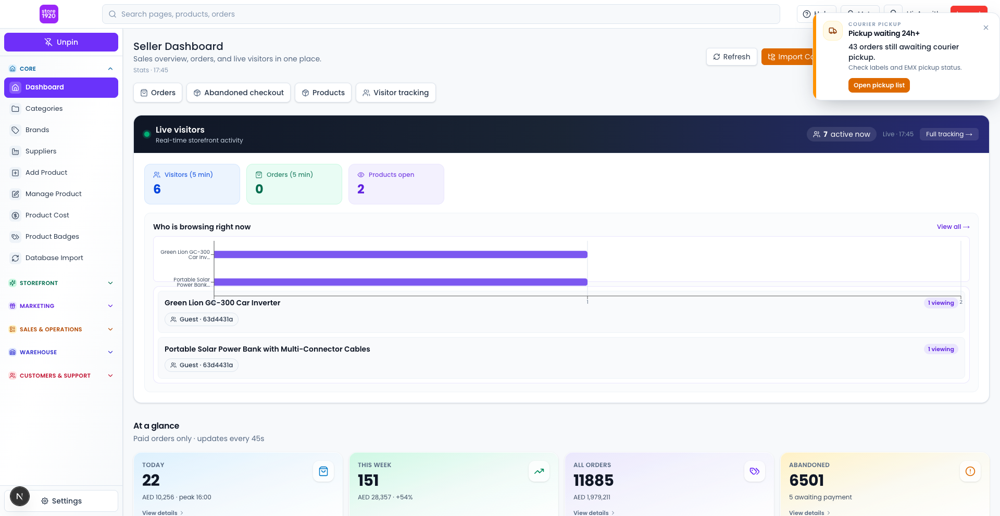
This is the Welcome screen.
What to do
Sign in at /store/login.
Open a section in the left menu, then click the screen you need.
Your account, email, payments, and staff are under Settings at the bottom.
Save, then look at the shop if customers are supposed to see the change.
What you will see on the screen
01
Core
Daily catalog work. The home dashboard, categories, brands, suppliers, products, purchase cost, product badges, and a WordPress or WooCommerce import.
02
Storefront
How the public shop and the mobile app home screen look. Homepage blocks, banners, the header, SEO, blogs, and the image library.
03
Marketing
Offers, coupons, giveaways, the spin wheel, email campaigns, and the reports that show who is buying, searching, and leaving.
04
Sales & Operations
Orders, courier pickup, shipping prices, checkout payment limits, alerts, returns, balance, and the sales report.
05
Warehouse
On-hand stock, the log of who changed a quantity, and an Excel download of the catalog.
06
Customers & Support
Customer records, product reviews, support tickets, product emails, and messages from the public Contact Us form.
Heads upStaff only see the sidebar areas an owner turned on for them. If a screen is missing, open Settings, then Team Access.
Guide / Account settings
Account settings
Profile
This is your own login, not the shop. The name and photo here show inside the dashboard. Customers never see them. The name on the shop is on the Store tab.
Go to/store/settings
Then chooseProfile
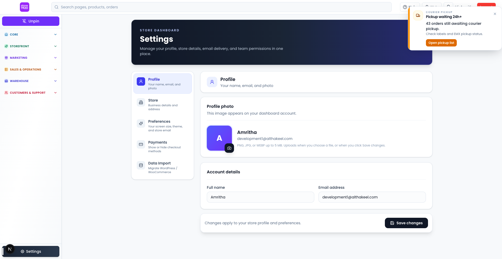
This is the Profile screen.
What to do
Open Settings from the bottom of the sidebar.
Stay on the Profile tab.
Update the photo, name, or email.
Click Save changes. Until you save, the old profile stays in place.
What you will see on the screen
01
Profile photo
The picture shown on this dashboard account. Use a PNG, JPG, or WEBP file up to 5 MB. Choosing a file starts the upload. Save changes also stores it. A broken or oversized file is rejected, so the previous photo stays.
02
Full name
The name shown next to this user in the dashboard. It does not rename the store, the invoices, or the public shop header. Use Store for the business name.
03
Email address
The login email for this person. Password resets and account notices go here. Change it only when this person should sign in with a different address.
04
Save changes
Writes the profile. If you leave the page without saving, the name and email you typed are discarded. The photo may already have uploaded when you picked the file.
Heads upThe store name customers see is on the Store tab, not here.
Guide / Account settings
Account settings
Store
This is the business itself: the name, phone, and address. Change it when the company details change. A staff member's personal name stays on Profile.
Go to/store/settings
Then chooseStore
What to do
Open Settings, then the Store tab.
Fill the identity fields first, then the address.
Save the page. The new name is what the account uses as the business name.
What you will see on the screen
01
Store name
The business name stored on the seller account. Use the name customers and couriers should recognize. This is separate from a staff member's personal name on Profile.
02
Business type
Retail, Wholesale, Service, Digital Products, or Other. Pick the closest match. It labels the account. It does not change shipping prices or which products you can sell.
03
Phone number
A contact number for the business, including the country code, for example +971. Staff and records use this number. It is not the WhatsApp button on the product page. That number is set under WhatsApp Widget.
04
Website URL
The public site address, starting with https://. Leave it blank if the shop itself is the only website.
05
Description
A short note about the store, saved with the account. It is not the homepage banner text and not the product description. Keep it to a few sentences.
06
Street address, city, state or emirate, and ZIP
The business address. In the UAE, use the emirate in State / Emirate. This address is the account record. Delivery fees for customers are set on Shipping, not by this ZIP code.
Guide / Account settings
Account settings
Preferences
This is how the store sends email, plus your currency and sign-in extras. Order mail and marketing mail use two different mailboxes, so a sale email and a receipt do not come from the same place.
Go to/store/settings
Then choosePreferences
What to do
Open Settings, then Preferences.
Turn notifications and two-factor authentication on or off.
Choose the currency.
Fill transactional SMTP for order mail, and promotional SMTP for campaigns. Save when both blocks are complete.
What you will see on the screen
01
Email notifications
When this is on, this account can receive dashboard updates about orders and promotions. Turning it off stops those notices for this user. It does not stop customer order emails.
02
Two-factor authentication
Adds a second check when this user signs in. Turn it on for owner accounts. A staff member who loses the second factor will need the owner to help them back in.
03
Currency preference
UAE Dirham (AED), US Dollar, Euro, or British Pound. Amounts in the dashboard are labeled with this currency. Match it to the currency customers pay in, which for this store is normally AED.
04
Transactional SMTP
Host, port, username, password, from email, from name, and TLS. This mailbox sends order confirmations, password resets, and other no-reply mail. If these fields are wrong, customers do not get order emails. A common host is the store's own mail server, port 465.
05
Promotional SMTP
A second mailbox used only for campaigns and newsletters. Email Marketing sends through this block, not through the transactional one. Keep the from-address different so customers can tell a receipt from a promotion.
Heads upTest a real order email after you change SMTP. A saved password that the mail host rejects will fail only when a message is sent.
Guide / Account settings
Account settings
Payments
Turn payment methods on or off for checkout. If a switch is off, the customer does not see that way to pay. The maximum order for each method is on Shipping.
Go to/store/settings
Then choosePayments
What to do
Open Settings, then Payments.
Turn on only the methods you currently accept.
Save. Open a test checkout and confirm the hidden method is gone.
If a method should stop above a certain order total, set that cap on Shipping.
What you will see on the screen
01
Cash on Delivery (COD)
Lets the customer pay the courier in cash. Turn it off when you do not want cash orders. The processing fee and the maximum order total for COD are on the Shipping screen, not on this switch.
02
Card payment
Credit and debit cards, including Visa, Mastercard, Amex, and Google Pay. The card form is hosted by the payment gateway. Store1920 does not store the card number. Turning this off hides cards at checkout.
03
Tabby
Buy now, pay later with Tabby. Customers see it only when this switch is on and the order total is inside the Tabby limit set on Shipping.
04
Tamara
Buy now, pay later with Tamara. Same rule as Tabby: the switch must be on, and the order must be under the Tamara maximum on Shipping. Use 0 on Shipping when there is no maximum.
Heads upShipping has the same on and off switches. Changing a method in either place updates checkout.
Guide / Account settings
Account settings
New tag
This is the little New label on product photos. It shows on the shop, search, cart, and the product page, then drops off after the number of days you set. For sale, low stock, and the other labels, use Product Badges in the sidebar. That page saves the same badges and can do more.
Go to/store/settings
Then chooseNew tag
What to do
Open Settings, then New tag.
Turn Show New badge on if new products should be marked.
Set how many days the badge stays visible.
Style badge 1, and add badge 2 only if you need a second label. Save, then check a newly added product on the shop.
What you will see on the screen
01
Show New badge
The master switch. Off removes the badge from every product image, even if a badge is still designed below. On allows badges for products that are still inside the day limit.
02
Show on product images
Draws the badge on top of the photo. Turn this off if you want the feature enabled but not painted on the picture. The master switch also turns this on when you enable the badge.
03
Show for how many days
A number from 1 to 365. A product older than this stops showing the badge. Example: 14 means a product added today shows the badge for two weeks, then the photo is plain again.
04
Show this badge
Hides one badge without deleting its colors and text. Use it when you want to pause a seasonal label and bring it back later.
05
English label and Arabic label
The words on the badge. English is used on the English shop. Arabic is used when the shopper is browsing in Arabic. Each label can be up to 24 characters. Example: New and جديد.
06
Position, shape, font, weight, and letters
Left or right corner, pill or rounded shape, the typeface, medium through extra bold, and UPPERCASE or as typed. These change only the badge, not the product title.
07
Border and colors
Border width from none to thick, plus background, text, and border color. Pick colors that stay readable on both light and dark product photos. The preview box on the card shows the result before you save.
08
Add another badge
Creates badge 2, up to a maximum of two. The second badge sits on the opposite side of the first so they do not cover each other. Delete badge removes that design.
Heads upThe full editor is Core → Product Badges. That page saves the same badges, and it can use conditions such as on sale, low stock, and fast delivery. The trust lines beside the buy box are a different screen, Product page badges.
Guide / Account settings
Account settings
Team Access
Invite someone, then choose which parts of the sidebar they can open. If a section is off for them, they simply do not see it. Only an owner, or someone allowed to manage staff, sees this tab.
Go to/store/settings?tab=team
Then chooseTeam Access
This is the Team Access screen.
What to do
Open Settings, then Team Access. You can also open /store/settings?tab=team.
Set the default access that new invites should start with.
Enter the person's email and send the invite. They accept it at /store/invite/accept.
After they join, use Edit access to change their areas, then Save access.
What you will see on the screen
01
Default access for new members
The permission set applied when you send an email invite. Set this before inviting, so a new person does not arrive with more access than you intended. You can still change them later.
02
Team member email
The address that receives the invite. They join with Google or email. If the message fails, copy the invite link shown after sending and give it to them directly.
03
Send invite
Emails the link. Sending can take a moment. A success note means the invite exists. It does not mean they have already accepted it.
04
Permission groups
Store & catalog, Orders & customers, Marketing, Support & reviews, Warehouse, and Team. Turn a group on to reveal its sidebar screens. Price editing and View settings history are separate switches inside these groups.
05
Edit access
Opens the switches for one person. The count, such as 6 of 20 areas, is how much of the sidebar they can see. Save access writes it. Hide closes the editor without being a separate save.
06
Delete
Removes that person from the dashboard. They can no longer sign in as staff. This does not delete their past orders or the products they edited.
Heads upDo not give Team access to everyone. A person who can manage staff can invite others.
Guide / Account settings
Account settings
Data Import
This button does not import anything by itself. It opens the wizard that copies products, categories, and customers from an old WordPress or WooCommerce file. The same wizard is under Core, Database Import.
Go to/store/settings
Then chooseData Import
What to do
Open Settings, then Data Import.
Click Open import wizard.
Continue on Database Import, where you choose the file and what to copy.
What you will see on the screen
01
Open import wizard
Goes to /store/settings/database-import. The same wizard is also in the Core sidebar under Database Import. Use either link. They open the same screen.
02
What the wizard can move
Products, categories, and customers from a legacy SQL schema. Review the summary counts before you commit. A second import of the same file can duplicate records, so run it once and check the catalog.
Heads upTake a backup, or import into a trial catalog first, before you run this on the live shop.
Guide / Account settings
Account settings
History
When a fee or a payment method changes and nobody remembers doing it, look here. Each row says who saved a setting, and when. Stock changes are not here. Those are on Inventory.
Go to/store/settings/history
This is the History screen.
What to do
Open Settings, then History, or go directly to /store/settings/history.
Read the newest rows first when something on the shop changed unexpectedly.
Match the person and the time with the setting you are checking.
What you will see on the screen
01
Who and when
Each row names the person and the time of the change. Use it after a checkout method disappears or a fee changes, so you know whether a teammate saved a new setting.
02
What you can trace
Payment switches, shipping changes, badge changes, and other settings writes. It is not the stock log. Stock edits are on Inventory. It is not the order status history. That stays on the order.
Guide / Core
Core
Dashboard
This is the first screen after you sign in. It shows who is on the shop right now, how many paid orders you have, and whether this week is ahead of last week. The number cards under At a glance count paid orders only, and they refresh about every 45 seconds. Profit, product cost, and delivery cost are not on this page. Those are on Sales Report.
Go to/store
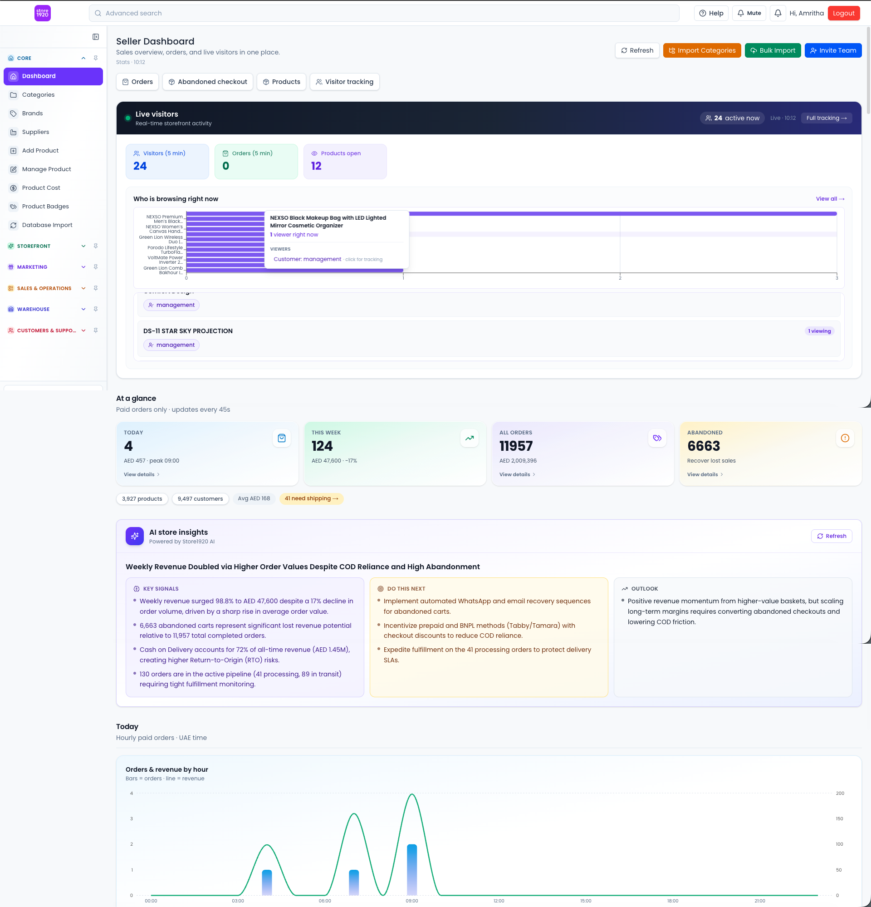
This is the Dashboard screen.
What to do
Open Dashboard in Core, or go to /store.
Read Live visitors first if you want to know who is browsing.
Read the four At a glance cards for today, this week, all paid orders, and abandoned checkouts.
Scroll to the charts for the hourly picture, the last 30 days, and this week against last week.
Use the buttons at the top when you need orders, products, a bulk import, or a new teammate.
What you will see on the screen
01
Refresh
Reloads the numbers without leaving the page. The small clock under the title is when the stats last updated. Updating means a refresh is still running.
02
Import Categories
Opens Categories so you can upload a spreadsheet of categories. It does not import products.
03
Bulk Import
Opens the product import screen. Use it when you are loading many products at once, not one category.
04
Invite Team
Opens Settings on the Team tab. That is where you add a staff login and choose which screens they can open.
Four shortcuts under the title. Orders opens the order list. Abandoned checkout opens carts that were started and not paid. Products opens Manage Product. Visitor tracking opens the full visitor log.
06
Live visitors
The dark bar at the top of the numbers. The green dot means it is live. Active now is people currently on the shop. Full tracking opens the detailed visitor page. The clock on this bar is the live feed, which is separate from the stats clock.
07
Visitors (5 min)
How many people arrived in the last five minutes. This is traffic, not orders.
08
Orders (5 min)
How many orders were placed in those same five minutes. A quiet visitor count with orders still coming in is normal. A busy visitor count with no orders is a browsing spike.
09
Products open
How many product pages are open right now. Under Who is browsing right now, purple bars show which products have the most people on them. The longer the bar, the more viewers. Each product then shows the people on it and a count such as 1 viewing. Guest means they are not signed in. A name opens that person's tracking for today. View all opens the full visitor log.
10
Today
Paid orders so far today, the money from them, and the busiest hour. The bag icon is this card. View details opens Orders.
11
This week
Paid orders this week and the money from them. The trend arrow is this card. The percentage compares this week's order count with last week. A plus means more orders than last week. A minus means fewer. This card does not open another page.
12
All orders
Every paid order the shop has taken, and the total money from them. The tag icon is this card. View details opens Orders. This is not profit.
13
Abandoned
Checkouts that were started and not paid. The alert icon is this card. If some are still waiting for payment, the small line says how many. If none are waiting, it says Recover lost sales. View details opens Abandoned checkout so you can follow up.
14
Products, customers, and average order
Three pills under the cards. Products and customers are links to those lists. Average order is the typical paid order value. It is not a link. Need shipping appears only when paid orders are still waiting to be sent, and it opens Orders.
15
AI store insights
Sits under the pills and says Powered by Store1920 AI. It has its own Refresh, separate from the button at the top of the page. The headline is the main point. Key signals are the facts behind it. Do this next is what to act on. Outlook is the longer view. It does not change orders, prices, or stock. If it cannot run, the box says so instead of inventing a result.
16
Orders and revenue by hour
Today, in UAE time. Each bar is how many paid orders landed in that hour. The green line is the money in that hour. An empty chart means no paid order yet today.
17
30-day sales
The same idea for each of the last 30 days. Bars are orders. The green area is revenue. Use it to see a slow week inside the month, not just today's total.
18
Week vs week
This week next to last week. Purple is orders. Green is revenue. The number above the chart is how many more or fewer orders you have this week, with the percentage when last week had orders to compare.
19
Order status
Where paid orders sit now: Processing, In transit, Delivered, Returned, and Cancelled. The ring is the mix. The list under it is the count for each status.
20
Payment methods
How those paid orders were paid. The slices follow what customers actually used, such as Card, Card (Stripe), Cash on delivery, Tabby, Tamara, and VaultsPay. A method with no orders does not appear. The slices are the share of orders, not a second copy of the revenue total.
21
Daily fulfillment
Hidden until you click Show daily chart. Each of the last 30 days is a stacked bar of Processing, In transit, Delivered, Returned, and Cancelled. Hide daily chart closes it again.
22
Customer reviews
The average star rating, such as 4.7 out of 5, and how many reviews that average comes from. Rating distribution is a bar for each star from 1 to 5. This is the shop total. Open Reviews when you need the words customers wrote.
23
Contact Us messages
The last block on this page. If the inbox is empty it says no contact messages have been received yet. When a message arrives, read it here and reply from your own mailbox to the address on the message. These are not support tickets. Contact Us Messages in the sidebar jumps to this same inbox.
Heads upThese cards count paid orders. A checkout that was not paid is on the Abandoned card, not inside Today or This week.
Guide / Core
Core
Categories
Categories are the groups customers browse, such as Electronics or Home. This page is that list. Find a group, change it, put products in it, or remove it. When you save a category, customers can see it. You do not have to add it to a menu afterwards.
Go to/store/categories
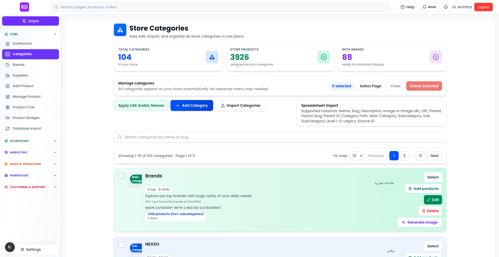
This is the Categories screen.
What to do
Open Categories under Core. The address is /store/categories.
To change one group, search for its name, then use the buttons on its card.
To put products in a group, click Add products on that card.
To remove several groups, tick their cards, then click Delete Selected.
To make a new group, click Add Category.
What you will see on the screen
01
The three numbers
Total Categories is how many groups you have. Store Products is how many products are placed in a group. With Images is how many groups already have a picture. A group with no picture still works on the shop.
02
Manage categories
The bar under those three numbers. This is where you tick cards and delete more than one. The line under the title means a saved category is already on the shop.
03
Selected, Select Page, and Clear
The blue pill counts every card you have ticked, including cards on other pages. Select Page ticks the cards on the page in front of you. When they are all ticked, the button says Unselect Page and clears only this page. Clear unticks every card, on every page.
04
Delete Selected
Stays grey until a card is ticked. It asks you to confirm. If you tick a parent group, the groups inside it are removed as well. The products stay in the catalog. While it runs, the button says Deleting.
05
A category card
One card is one group. The badge is the level. Main Category is the top. Sub Category sits inside a main one. Child Category sits inside a sub category. Grandchild Category is one level further. The card shows the English name, the Arabic name, and Slug, which is the word in the web address. The big product number counts items in this group and in the groups under it. The smaller line is how many are tagged on this group only. Click the name or the number to open those products in Manage Product.
06
Select
Ticks this one card so you can delete it with others. The box on the left of the picture does the same thing. A ticked card has a blue outline, and the button says Selected.
07
Add products
Opens a window for this group. Search by product name or SKU. Narrow the list by brand, price, stock, or how finished the product details are. A product already in this group says Already in category and stays unticked. Tick the ones you want, then click Add. Cancel closes the window and changes nothing.
08
Edit
Opens the form with this group already filled in. Change the name, the Arabic name, which parent it sits under, the description, the search text, or the picture. Click Update Category to keep the change. Cancel closes the form and leaves the old details. Changing the English name also changes the shop address for that group, so change a public name only when you mean to.
09
Delete
Removes this one group after you confirm. If smaller groups still sit inside it, remove those first, or tick the parent and use Delete Selected. The products stay in the catalog.
10
Generate image
Makes a picture from the English name. The button says Generating while it runs. In the Edit form you can upload your own PNG or JPG, up to 5MB, or click Create with AI.
11
Search
The box above the cards. It matches the English name, the Arabic name, or the slug. When a smaller group matches, its parent stays in the list so you can see where it belongs. No Categories Found means those words are not on any card. Search before you add a group, so you do not make a second copy.
12
Pages
Showing tells you which cards are on screen, such as 1 to 10. Per page can be 5, 10, 20, or 50. Previous, the page numbers, and Next move through the list. Select Page only ticks the page you are looking at.
13
Apply UAE Arabic Names
Fills an Arabic name on groups that do not have one yet, using the English name. It then tells you how many it updated. The button hides while the add or edit form is open.
14
Add Category
Opens a blank form. Category Name is the only box you must fill. Arabic Name is what Arabic shoppers see. Leave it empty and a UAE Arabic name is suggested from the English name. The category address is written for you from the English name. Parent Category left on None makes a top group. Choose a parent to place this group inside another one.
15
Description
The paragraph customers read under the category name. Write the English one first. Translate copies it into the Arabic box. If the English box is empty, customers see the Arabic paragraph. Each box holds 2,000 characters. The Arabic box is right to left. The rest of this page stays left to right.
16
SEO
Meta Title and Meta Description are the lines search engines and shared links use. Customers still see the normal category name on the page. Leave both boxes empty to keep the usual title. The title holds 120 characters. The description holds 320.
17
Import Categories
Loads many groups from one spreadsheet, .csv, .xlsx, or .xls. The box beside the button lists the column names the file can use, such as Name, Description, Image, and Parent. When it finishes, read the note. Rows with a problem are listed so you can fix them and import those rows again. Products are added with Add products, or from Manage Product.
Heads upRemoving a category takes it off the shop. The products are still in Manage Product. Put them in another category if customers should still find them that way.
Guide / Core
Core
Suppliers
This is who you buy from. Customers never see this page. Add a supplier here first. Then, on Add Product, you can attach that name to a product.
Go to/store/suppliers
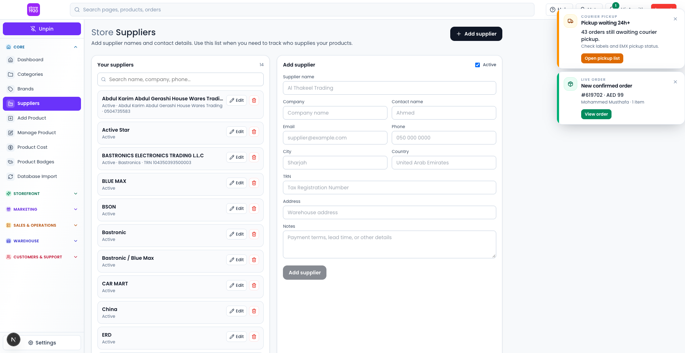
This is the Suppliers screen.
What to do
Open Suppliers in the Core section of the sidebar. The address is /store/suppliers.
Click Add supplier, or use the form on the right if it already says Add supplier.
Enter the supplier name. That is the only required field. Add company, contact, phone, TRN, and notes if you have them.
Click Add supplier. The name appears in Your suppliers on the left, and it becomes available when you edit a product.
What you will see on the screen
01
Supplier name
The name your team uses for this supplier. It is required. Save stays disabled until the name is filled in. This is the name shown in the list and in Choose suppliers on Add Product. It is not the public store name.
02
Company
The registered or trading company, when it differs from the short name you use in the list. Leave it blank if the supplier name is already the company name.
03
Contact name
The person you deal with at that company, such as a salesperson. This is a note for your team. It is not a dashboard login.
04
Email
The supplier's email. The dashboard does not send mail from this field. Use it so the team knows where to write.
05
Phone
The supplier's phone number. Search on the left matches this number, so enter the number your team actually dials.
06
City, country, and address
Where the supplier is, including the warehouse address if you need it for pickup or paperwork. These fields do not change customer delivery fees. Customer shipping is set on Shipping.
07
TRN
Tax Registration Number. Store it here when invoices from this supplier should be matched to a TRN. It is shown on the supplier row in the list as TRN followed by the number.
08
Notes
Payment terms, lead time, or anything else the team should remember. Shoppers do not see these notes.
09
Active
Checked means the supplier is in use. Uncheck it to mark the supplier inactive without deleting the record. The list shows Active or Inactive under the name. An inactive supplier stays in this list so you can turn it back on.
10
Your suppliers and search
The left column is everyone already saved, with a count at the top. Search matches name, company, or phone. Click a row or Edit to load that supplier into the form.
11
Add supplier and Save changes
Add supplier creates a new record. When you are editing, the same button says Save changes and updates that supplier. Clear form throws away the edit and starts a blank supplier. Leaving the page without saving discards what you typed.
12
Delete
Removes that supplier. The confirmation says this cannot be undone. Products that were linked to this supplier lose that link. The products themselves stay in the catalog.
Heads upAdd the supplier here before you try to attach it to a product. Add Product can only choose suppliers that already exist in this list.
Guide / Core
Core
Brands
Use this when the same brand was typed two ways, like nike and Nike. Rename it, or merge the extras into the spelling you want customers to see.
Go to/store/brands
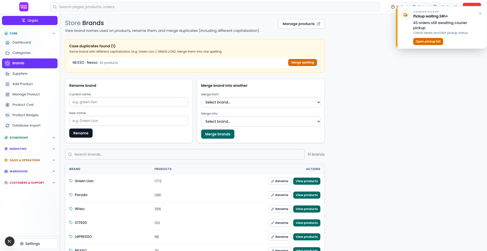
This is the Brands screen.
What to do
Open Brands.
Review the case-duplicate groups.
Rename a brand if the spelling should change everywhere, or merge it into the brand you are keeping.
Check a product page afterward. The brand on the product updates with the rename or merge.
What you will see on the screen
01
Case duplicates
Groups the same brand that was typed in different ways. Merging them gives shoppers one brand filter instead of two.
02
Rename brand
Changes the brand label on every matching product. Use the spelling you want on the shop, including capitals.
03
Merge brand into another
Moves products from the brand you are closing onto the brand you keep. After the merge, the old label should no longer appear as its own brand.
Guide / Core
Core
Add Product
This is where you create a product, and where you land when you edit one from Manage Product. Fill the name, price, and stock before the long description. Arabic fields type right to left. The rest of the page stays English.
Go to/store/add-product
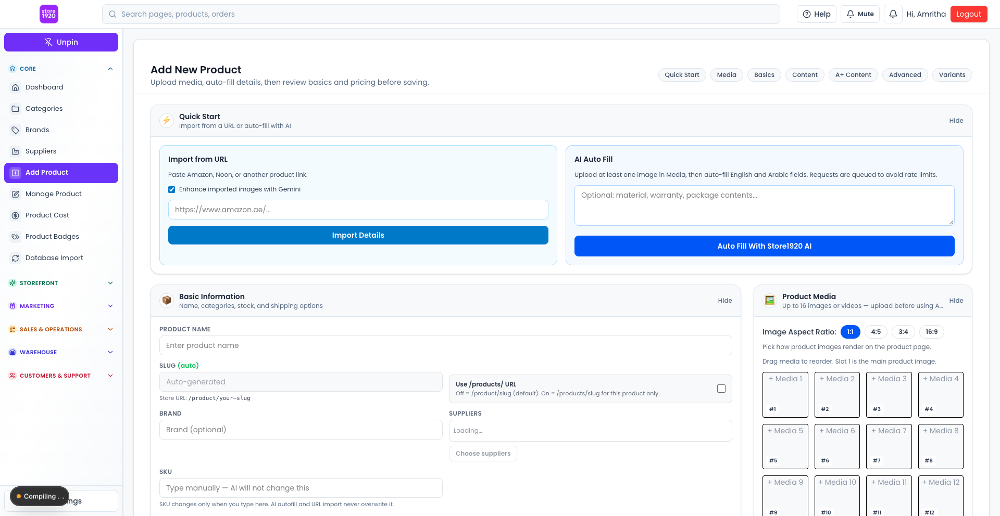
This is the Add Product screen.
What to do
Open Add Product for a new item, or open a row in Manage Product to edit.
Fill identity, shipping facts, and prices before the long description.
Add variants if the shopper must choose a color, size, or pack. Add gallery images.
Save, then open the public product page and confirm the price, stock, and photos.
What you will see on the screen
01
Identity
Product name, slug, brand, SKU, categories, stock quantity, and the units-sold figure shown to shoppers. The slug becomes the product link. Change it only when you intend to change the URL. Stock here is the quantity shoppers can buy. Warehouse inventory is the operational stock screen.
02
Shipping facts
Waslah HS code, origin country, and ship weight in kilograms. Couriers and customs use these. A missing weight can block automatic shipping, so enter kilograms, not grams, unless the field says otherwise.
03
Prices
Regular price and sale price, plus the matching Arabic price fields. The sale price is what the shopper pays when it is lower than the regular price. Leave the sale price empty when the item is not discounted.
04
Copy
Short description, sectioned description blocks, specification tables, and the full description. This is the text on the product page. It is not the SEO description.
05
A+ content
Richer content below the buy box, with separate desktop and mobile versions, including Arabic. Use it for long stories and comparison images. Shoppers on a phone see the mobile version.
06
Tags, SEO, and badges
Tags help featured blocks and search. The SEO title and description are for search results. Product badges here are labels on this product. The automatic New badge is still controlled in Settings.
07
Variants
A group name, the choice the customer sees, optional color and size, a variant image, stock, SKU, and prices. Each variant can sell out on its own. If you do not need choices, leave variants empty and use the main stock and price.
08
Packs and gallery
Further down the form. Packs are quantity offers. The gallery is the set of photos on the product page. The first strong photo is what category grids usually show, so check the order.
Heads upSave before you leave. A long product form is easy to lose if the tab closes.
Guide / Core
Core
Manage Product
This is the list of everything you sell. Search, open a product to edit it, hide it from the shop, or mark it for fast delivery. A spreadsheet of many new products is a different page, Bulk import.
Go to/store/manage-product
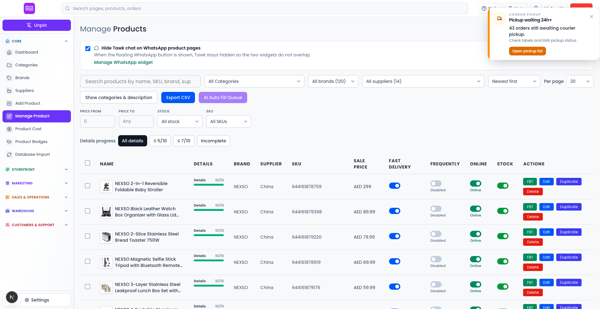
This is the Manage Product screen.
What to do
Open Manage Product.
Search by name or SKU, or use the filters.
Open a row to edit it in Add Product.
Use the fast-delivery control on the rows that should appear in the fast-delivery collection.
What you will see on the screen
01
Search and filters
Find one product without scrolling the whole catalog. Search before you create a new product, so you do not add a duplicate SKU.
02
Open a row
Loads that product in the Add Product editor. Changes are saved from the editor, not from the list, except for the quick actions on the row.
03
Publish state
Controls whether shoppers can open the product. An unpublished product stays in this list for the team and stays off the public shop.
04
Fast delivery
Marks the product for the fast-delivery collection. Turn it on only when you can actually ship it that way. The storefront collection reads this flag.
05
Bulk import
Not on this page. Open /store/bulk-import when you have a spreadsheet of many products. Database Import is for a WordPress or WooCommerce SQL file, which is a different job.
Guide / Core
Core
Product Cost
This is what you paid for the product, not what the customer pays. The shop price stays the same. Sales reports use this number to work out profit.
Go to/store/product-cost
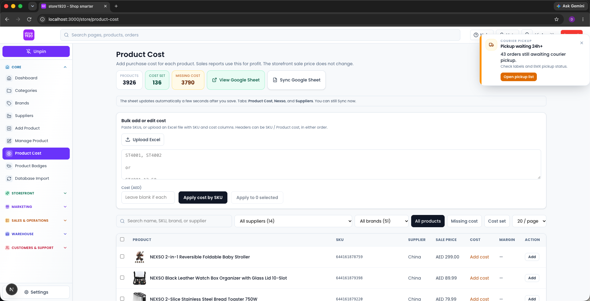
This is the Product Cost screen.
What to do
Open Product Cost in the Core sidebar. The address is /store/product-cost.
Use Missing cost to find products that have no purchase price yet.
Click Add or Edit on one row, type the cost, and save that row. Or paste many SKUs and apply one cost, or a cost on each line.
Check Margin on the row. Check Cost history if you need to see who changed a cost.
What you will see on the screen
01
Products, Cost set, and Missing cost
The three counts at the top. Products is the catalog size. Cost set is how many already have a purchase cost. Missing cost is how many still need one. A product with no cost cannot show a profit margin.
02
Google Sheet
If a sheet is connected, it updates a few seconds after you save. The tabs are Product Cost, Nexso, and Suppliers. View Google Sheet opens it. Sync Google Sheet pushes the current costs now, without waiting. If the sheet is not connected, the page says so and costs still save in the store.
03
Upload Excel
An .xlsx, .xls, or .csv file with SKU and cost columns. Headers can be SKU and Product cost, in either order. The file fills the bulk box. It does not change the shop price.
04
Paste SKUs
One SKU per line, or several SKUs separated by commas, when every line should get the same cost. Or write SKU,cost on each line, such as ST4001,12.50, when each product has its own cost.
05
Cost amount
The purchase cost in the store currency, used when the pasted lines do not already include a cost. Leave it blank if each line already has a cost. Use 0 only when the item really cost nothing.
06
Apply cost by SKU
Writes the cost onto every SKU in the box. Unknown SKUs are skipped. This updates purchase cost only.
07
Apply to selected
Writes that same cost onto the rows you ticked in the table. The button stays off until at least one row is selected.
08
Search and filters
Search by product name, SKU, brand, or supplier. Then narrow with All suppliers, No supplier, a brand, and All products, Missing cost, or Cost set. Page size changes how many rows you see at once.
09
Product table
Each row shows the product, SKU, supplier, sale price, cost, and margin. Sale price is what the shopper pays. Cost is what you paid. Margin is the percent left after cost, and it appears only when both sale price and cost are above zero. Add or Edit opens the cost on that row. Save writes it. Cancel discards the edit.
10
Cost history
Every cost change from this page: when, SKU, product, who did it, the old cost, the new cost, and whether it came from a row, a bulk paste, Excel, or the sheet. The same events are in Activity history. This log does not include stock changes. Those are on Inventory.
Heads upA wrong cost changes profit in the sales report. It does not change what the customer pays. Fix the sale price on the product if the shop price is wrong.
Guide / Core
Core
Product Badges
These are the labels on the product photo, like New or Sale. You choose when each one shows, then how it looks. Nothing reaches the shop until you click Save changes. You can have up to 8.
Go to/store/badges
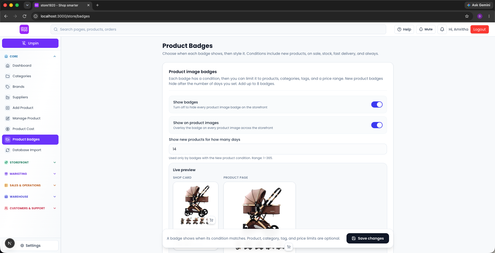
This is the Product Badges screen.
What to do
Open Product Badges in the Core sidebar. The address is /store/badges.
Turn Show badges on.
For each badge, set the English and Arabic words, then choose a condition such as New product, On sale, or Low stock.
Limit it further only if it should not appear on every product that matches the condition.
Check the live preview, then click Save changes and open a matching product on the shop.
What you will see on the screen
01
Show badges
The master switch. Off hides every image badge on the shop, even if the designs below are still filled in. On allows each badge that is itself turned on and whose condition matches.
02
Show on product images
Draws the badge on top of the product photo. Turn this off if badges should be enabled but not painted on the picture. Turning Show badges on also turns this on.
03
Show new products for how many days
A number from 1 to 365. Only badges whose condition is New product use it. A product older than this many days stops showing that New badge. Other conditions, such as On sale, ignore this number.
04
Live preview
A shop card and a product page using a sample product, so you can see placement and colors before you save. The preview shows badges that are turned on.
05
Show this badge
Hides one badge without deleting its design. Use it to pause a seasonal label and bring it back later.
06
English label and Arabic label
The words on the badge. English is used on the English shop. Arabic is used when the shopper is browsing in Arabic. Example: Sale and تخفيض.
07
Condition
When the badge is allowed to show. Nothing uses only the limits you add below. Specific products, Category, Product tag, and Price range show on that subset. New product uses the day limit. On sale shows when the sale price is lower than the original price. Out of stock and Low stock follow inventory. Fast delivery shows on products marked for fast delivery. Free shipping shows on products that ship free. Always shows on every product while the badge is on.
08
Low stock quantity
Shown when the condition is Low stock. The badge appears when the remaining quantity is at or below this number.
09
Only these products, categories, tags, and price
Optional extra limits. A badge shows when its condition matches, and these limits can narrow it further. Leave them empty to use the condition alone. Price from and Price to are in AED. A blank price means any price.
10
Position, shape, size, and spacing
Where the badge sits on the photo, from the corners to the middle, and how it looks: pill, rounded, square, tag, or circle. Size is small, medium, or large. Distance from the edge, shadow, letter spacing, and opacity keep the label readable on the photo.
11
Font, weight, letters, and colors
Sans, serif, display, mono, or script. Weight runs from regular to extra bold. Letters can be UPPERCASE, Capitalize, lowercase, or as typed. Set the background, text color, and border color. Background can be transparent. Border width runs from 0 to 8 pixels.
12
Add another badge, Delete badge, and Save changes
Add another badge creates the next design, up to 8. Delete badge removes one design when more than one exists. Save changes writes all of them. Until you save, the shop still uses the previous badges.
Heads upThese are the badges on the product photo. The trust lines beside the buy box, such as delivery and returns text, are edited under Product page badges. Settings → New tag saves this same badge set, with fewer condition controls. Use this page when you need On sale, stock, or fast delivery.
Guide / Core
Core
Database Import
Use this to copy an old WordPress or WooCommerce shop into Store1920. Point it at the old file, choose what to bring over, read the counts, and only then run it.
Go to/store/settings/database-import
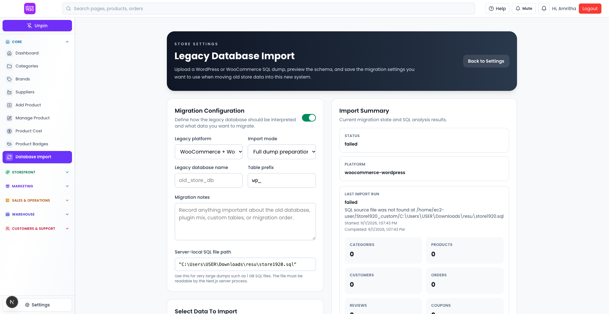
This is the Database Import screen.
What to do
Open Database Import from Core, or from Settings under Data Import.
Set the migration source and connection.
Choose products, categories, customers, and any related records.
Read the import summary. Run the import only when the counts look right.
What you will see on the screen
01
Migration configuration
Where the old database is and how this store should connect to it. A wrong host or database name fails before any product is copied.
02
Select data to import
Products, categories, customers, and related records. Leave out anything you do not want in the new shop. You can import categories first, then products, if you want to check the tree.
03
Import source
The SQL or export the wizard reads. Use the file from the old store, not a spreadsheet from Bulk import.
04
Import summary
Counts before the copy is committed. If the product count is far from the old shop, stop and check the source. Running the same import twice can create duplicates.
Heads upThis wizard changes the live catalog. Confirm you are in the right store account before you run it.
Guide / Storefront
Storefront
Customize
This is the menu for how the shop looks. It does not edit products. Design pages change layout. Selection pages choose which products show in a homepage block.
Go to/store/customize
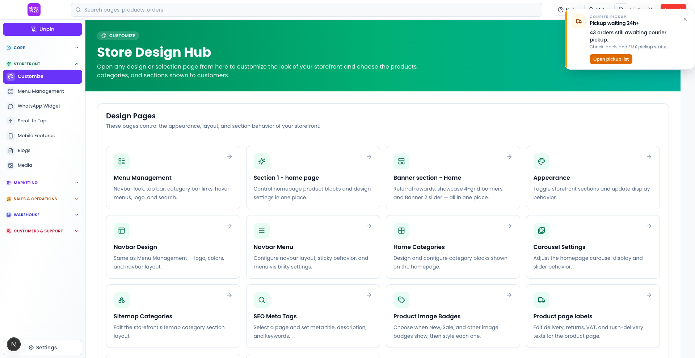
This is the Customize screen.
What to do
Open Customize.
Use a Design page when you are changing layout, colors, menus, or widgets.
Use a Selection page when you are choosing which products or categories fill a homepage block.
What you will see on the screen
01
Design pages
Homepage sections, banners, appearance, navbar, home categories, carousel, sitemap categories, SEO, product-page badges, WhatsApp, and scroll to top. These change chrome and layout.
02
Selection pages
Recommended products, Featured sections, Featured products, Today's Deals / Offers, and Top Deals. These choose the products inside a block. The block design is edited on its own screen.
Guide / Storefront
Storefront
Section 1 — home page
These are the product rows on the homepage. Turn a row off, change its title, or change which products fill it. The products stay in the catalog even if you hide the row.
Go to/store/home-preferences
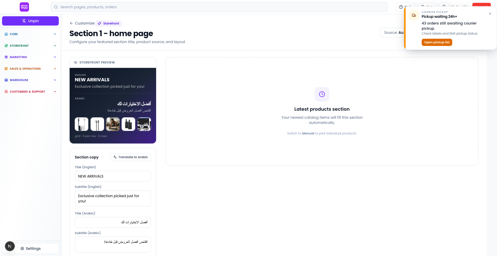
This is the Section 1 — home page screen.
What to do
Open the homepage section screen.
Turn off any block you do not want on the public homepage.
Edit the title shoppers read, then set how products are chosen.
Save and refresh the public homepage.
What you will see on the screen
01
Show or hide a block
A hidden block is removed from the homepage. The products stay in the catalog. Use this to simplify the page without deleting products.
02
Titles
The heading shoppers see above that block. Write it the way it should read on the shop, not as an internal note.
03
Fill rules
How the block picks products, for example by a collection or a manual list, depending on the block. If a block looks empty on the shop, the rule matched no products.
Guide / Storefront
Storefront
Banner section — Home
Homepage banners live here, along with what a customer earns for inviting a friend. Customers see the pictures. They do not see this settings page.
Go to/store/preferences
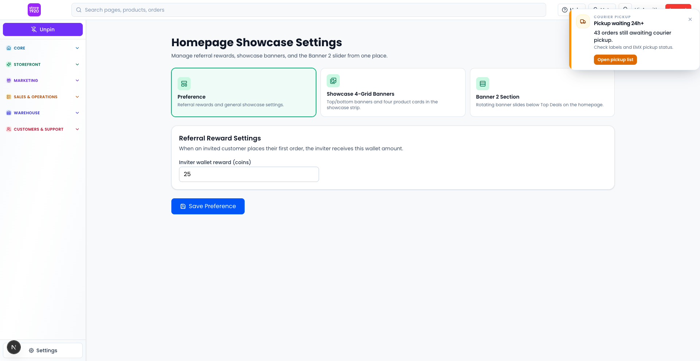
This is the Banner section — Home screen.
What to do
Open Banner section from Customize, or go to /store/preferences.
Set the referral reward if that program is active.
Edit the 4-grid showcase and the Banner 2 slider.
Save and check the homepage on a desktop width and a phone width.
What you will see on the screen
01
Referral reward
What the referrer and the new customer receive. Leave it unset or off if you are not running referrals. It does not create a coupon by itself unless the reward says it does.
02
Showcase 4-grid banners
Four homepage images in a grid. Each cell needs an image and a link. An empty cell leaves a gap, so fill all four or hide the block.
03
Banner 2 slider
The second homepage slider. Order the slides the way they should play. The first slide is what shoppers see before the slider moves.
Guide / Storefront
Storefront
Appearance
These switches show or hide parts of the public shop. Turning one off hides that section. It does not delete the products or the text.
Go to/store/storefront/appearance
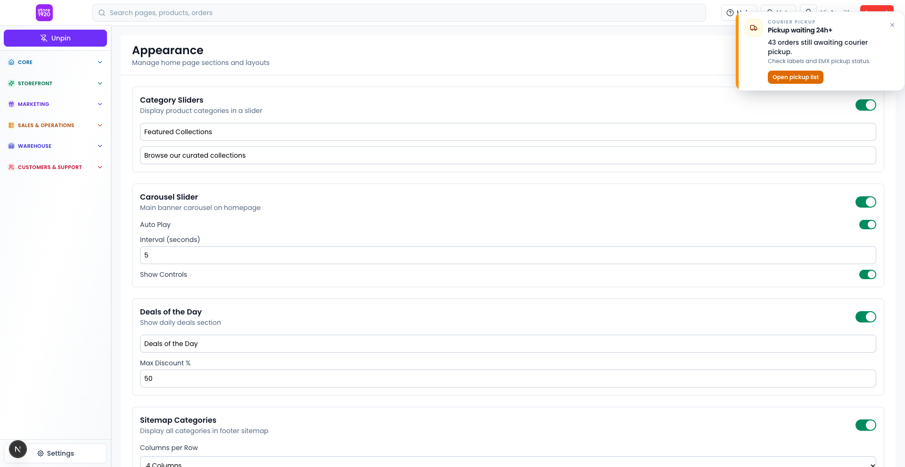
This is the Appearance screen.
What to do
Open Appearance.
Change one switch.
Save and look at the matching place on the public shop before you change the next switch.
What you will see on the screen
01
Section visibility
Turns a public section on or off. Hidden means shoppers do not see it. The content you already wrote is kept, so you can turn the section back on later.
02
Display behavior
How a visible section is laid out. Read the label on each switch. A layout change can move a block without deleting it.
Guide / Storefront
Storefront
Navbar Design
This is the top bar customers see: the logo, the links, and the bar color. The bigger header editor, including the buttons next to LAST CHANCE, is Menu Management.
Go to/store/navbar-menu
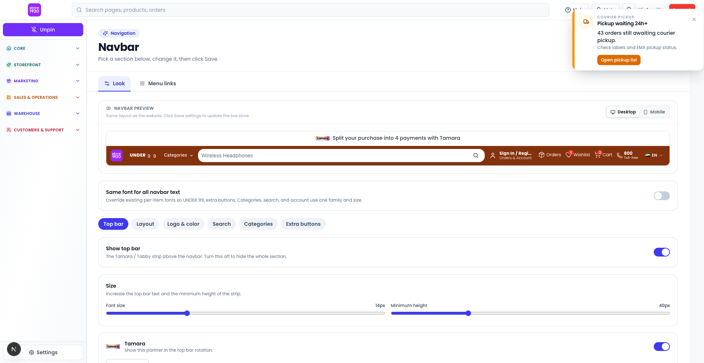
This is the Navbar Design screen.
What to do
Open Navbar Design.
Upload the logo if the brand mark changed.
Set the background color so the logo still reads clearly.
Update the links, save, and check the public header.
What you will see on the screen
01
Menu links
The links in the top bar. Remove a link here when that destination should not be in the header. The page itself still exists if it has its own address.
02
Logo file
The image in the header. Use a file that stays sharp on a light or dark bar. After upload, refresh the shop. A cached logo can linger for a moment.
03
Navbar background color
The bar color behind the logo and links. Pick a color that keeps the text readable. White text on a pale bar will fail.
Guide / Storefront
Storefront
Navbar Menu
Choose whether the header stays on screen while someone scrolls, and which menus show. For the logo and the LAST CHANCE buttons, use Menu Management.
Go to/store/storefront/navbar-menu
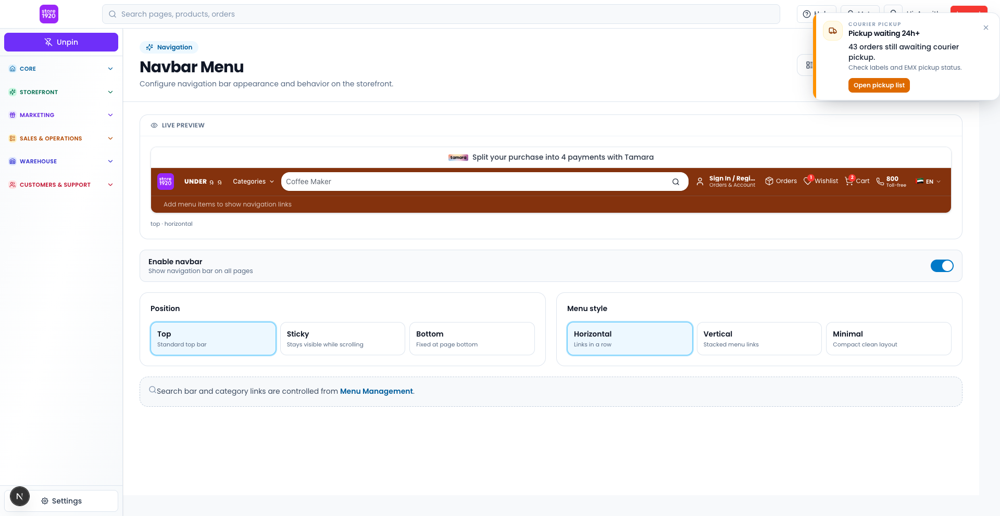
This is the Navbar Menu screen.
What to do
Open Navbar Menu.
Set sticky on if the header should remain visible while scrolling.
Hide any menu that should not appear.
Save and scroll the public homepage to confirm the header behavior.
What you will see on the screen
01
Layout
The arrangement of the header. Change it when the logo, search, and menus are in the wrong order.
02
Sticky header
When on, the bar stays at the top as the shopper scrolls. When off, it scrolls away with the page.
03
Menu visibility
Shows or hides a menu. Hidden menus are not deleted. Uncheck only the menus that should leave the live shop.
Guide / Storefront
Storefront
Home Categories
Pick which categories show on the homepage, and how that block looks. Create the category first under Categories. This page only chooses which ones appear.
Go to/store/storefront/home-menu-categories
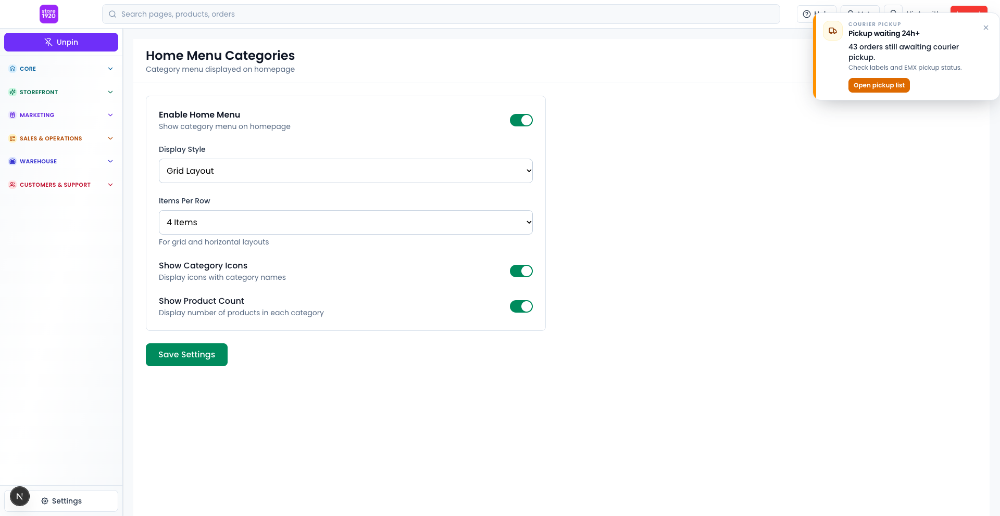
This is the Home Categories screen.
What to do
Create the category under Categories if it does not exist yet.
Open Home Categories.
Pick the categories and set the labels and layout.
Save and confirm the homepage block links to the right category pages.
What you will see on the screen
01
Category selection
The categories shown in the block. A category that is hidden in the catalog should not be selected here, or the link will disappoint the shopper.
02
Block layout and labels
How the tiles or list are arranged, and the words on them. Labels can differ from the category's formal name when you want a shorter homepage title.
Guide / Storefront
Storefront
Carousel Settings
This is the big slider at the top of the homepage. The first slide is what people see right away. Put the current offer first.
Go to/store/storefront/carousel-slider
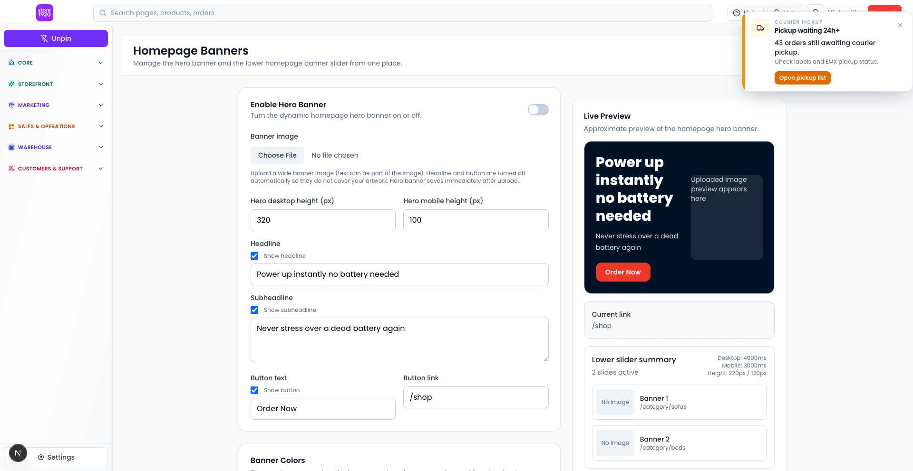
This is the Carousel Settings screen.
What to do
Open Carousel Settings.
Add a slide with an image and the page it should open.
Drag or reorder so the most important offer is first.
Set autoplay, save, and watch the homepage for one full cycle.
What you will see on the screen
01
Slides
Each slide is an image plus a link. Shoppers who click the image go to that link. A slide with no link is a picture only.
02
Order
The first slide is what shoppers see before autoplay moves on. Put the current campaign first. Later slides are seen only by people who wait or click through.
03
Autoplay
Moves to the next slide without a click. Turn it off if the hero should stay on one message until the shopper moves it.
Guide / Storefront
Storefront
Sitemap Categories
Choose which categories appear on the public sitemap page. Leaving one out does not delete it from the shop. It only drops it from that list.
Go to/store/storefront/sitemap-categories
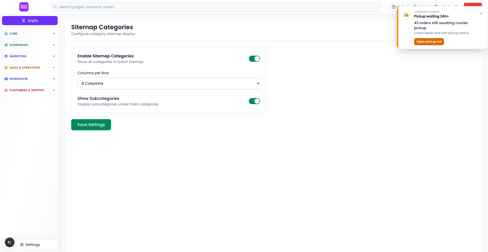
This is the Sitemap Categories screen.
What to do
Open Sitemap Categories.
Include the categories shoppers and search engines should be able to find from the sitemap.
Set the layout, save, and open the public sitemap page.
What you will see on the screen
01
Which categories are listed
Only selected categories appear in that sitemap block. Leaving a category out does not delete it from the shop. It only removes it from this list.
02
Layout
How the sitemap block is arranged. Use the layout that stays readable when you have many categories.
Guide / Storefront
Storefront
SEO Meta Tags
This is the title and short description Google shows for one page. It is not the heading customers see on the page itself. Edit one page at a time.
Go to/store/storefront/seo
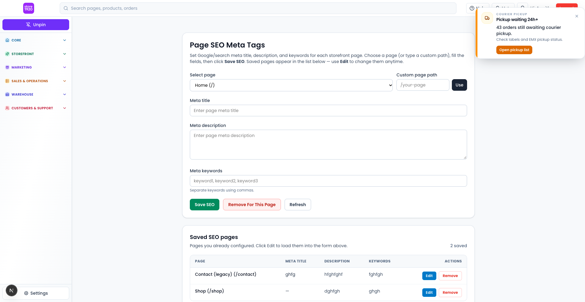
This is the SEO Meta Tags screen.
What to do
Open SEO Meta Tags.
Pick the page you are editing.
Write a title and a description a shopper would understand in a search result.
Save, then view the page source or a search preview if you use one.
What you will see on the screen
01
Page
Which public page these tags belong to. Changing the homepage tags does not change a category or a product. Product SEO is on the product editor.
02
Meta title
The title a search result shows. Keep it specific. It can differ from the on-page heading.
03
Meta description
The short paragraph under the title in search results. Write one or two sentences about that page.
04
Keywords
Extra words for the page record. Modern search relies more on the title and description, so do not stuff a long list.
Guide / Storefront
Storefront
Product page badges
These are the short trust lines next to the buy button, like delivery and returns. They are not the New or Sale sticker on the photo. That sticker is Product Badges.
Go to/store/customize/product-page
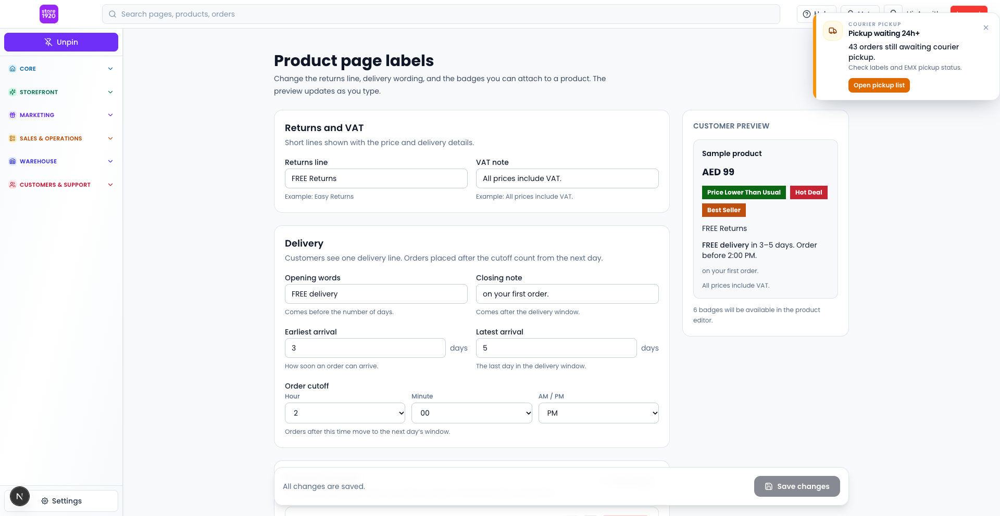
This is the Product page badges screen.
What to do
Open Product page badges from Customize.
Edit the badge labels shoppers see next to the price and the add-to-cart button.
Edit the delivery, returns, VAT, and rush-delivery sentences so they match the policy you actually offer.
Save and open any product page.
What you will see on the screen
01
Product badges
Short trust labels beside the buy box, shared by product pages. They do not change the price. Write only claims you can keep, such as a delivery promise you really ship.
02
Delivery, returns, VAT, and rush delivery
The explanatory lines under or beside those badges. If the return window is 7 days, the sentence should say 7 days. The master policy page is separate. This text is the line on the product.
Guide / Storefront
Storefront
WhatsApp Widget
This is the WhatsApp button on the product page. Customers tap it and message the number you put here. It is not the phone number on the Store tab.
Go to/store/customize/whatsapp-widget
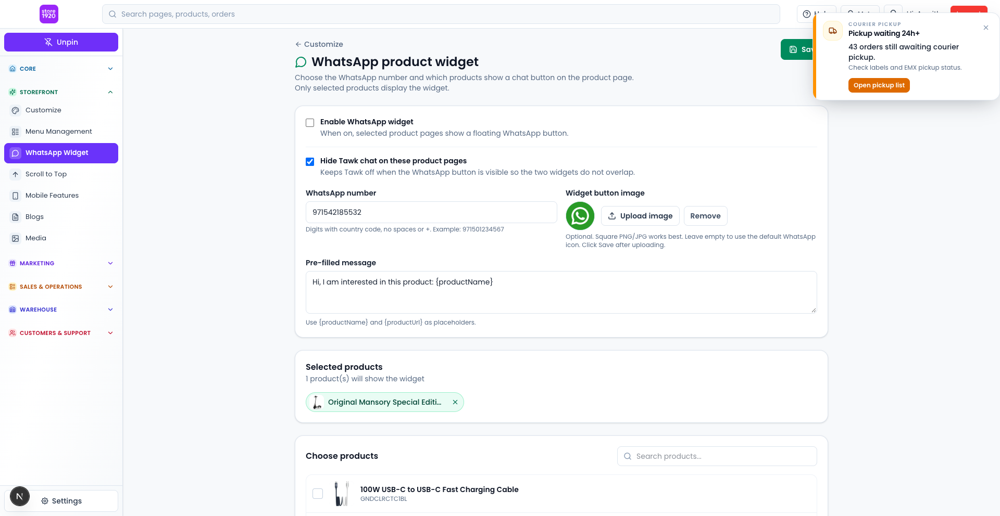
This is the WhatsApp Widget screen.
What to do
Open WhatsApp Widget.
Enter the WhatsApp number in international form, without spaces if the field rejects them.
Choose which product pages show the button.
Save and open a product on your phone to confirm WhatsApp opens the right chat.
What you will see on the screen
01
WhatsApp number
The business number that receives the chat. This is not the phone field on the Store tab. A wrong country code opens the wrong contact.
02
Where it shows
Which product pages include the button. Hide it on pages where you do not want a chat prompt.
Guide / Storefront
Storefront
Scroll to Top
This button jumps a long page back to the top. Put it where it does not cover the chat or the WhatsApp button.
Go to/store/customize/scroll-to-top
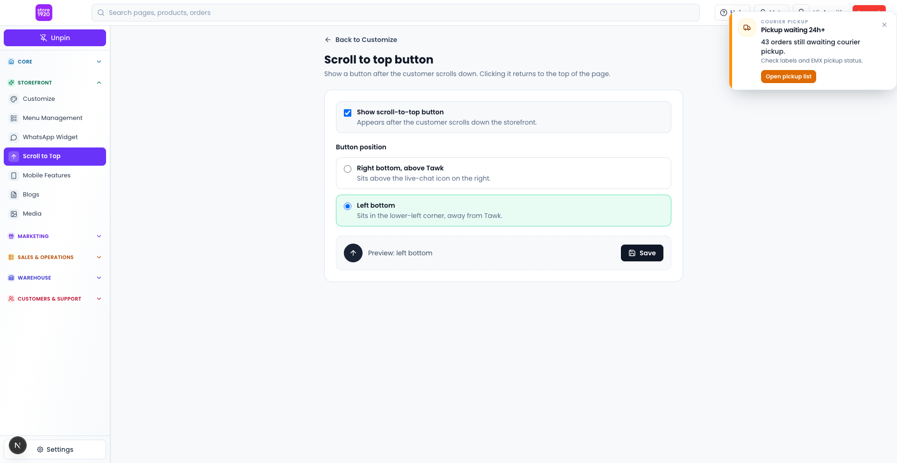
This is the Scroll to Top screen.
What to do
Open Scroll to Top.
Turn the button on.
Pick the corner that does not cover the chat or the add-to-cart area.
Save and scroll a long product or category page.
What you will see on the screen
01
Show or hide
Off removes the button on every public page. On shows it after the shopper has scrolled down, so a long product or category page can jump back to the top.
02
Position
Right side above the Tawk chat, or bottom left. Pick the side that stays clear of the WhatsApp button and the chat widget.
Guide / Storefront
Storefront
Today's Deals / Offers
This builds the public offers page and the deals button in the header. You write the title, then choose which products qualify.
Go to/store/customize/offers
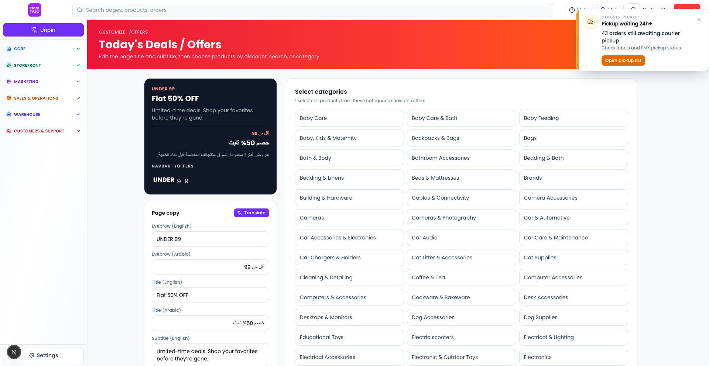
This is the Today's Deals / Offers screen.
What to do
Open Today's Deals / Offers.
Write the page title and subtitle.
Style the header deals button.
Choose the product source: by discount, by search, or by category. Save and open /offers.
What you will see on the screen
01
Page title and subtitle
The heading on /offers. Shoppers read this before the product grid. Say what the deal is, for example today's discounts, not an internal campaign code.
02
Header deals button
The button in the shop header that opens this page. Text and style should stay readable on the navbar color you set.
03
Product source
By discount includes products that have a sale price. By search uses a search rule. By category limits the page to one category. If the page is empty, the rule matched nothing.
Guide / Storefront
Storefront
Top Deals
This is one block on the homepage. Name it, then either let a rule fill it or pick the products yourself.
Go to/store/customize/top-deals
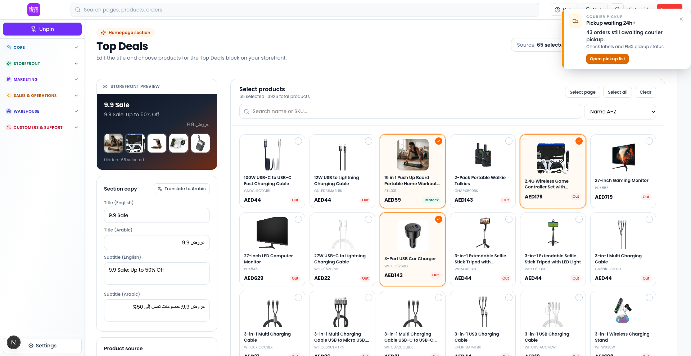
This is the Top Deals screen.
What to do
Open Top Deals.
Write the section title shoppers should see.
Choose the source. If you pick products by hand, search and add them in the order they should appear.
Save and refresh the homepage.
What you will see on the screen
01
Section copy
The heading shoppers read above the Top Deals products. Keep it short enough to fit the homepage. Changing the title does not change which products are inside the block.
02
Product source
Automatic rules fill the block from the catalog. A manual pick shows only the products you added, in your order. Remove a product here when it should leave the block but stay for sale.
Guide / Storefront
Storefront
Featured Sections
These are the featured collections on the homepage. Choose which ones show, and in what order. An empty collection leaves a gap, so fill it or remove it.
Go to/store/category-slider
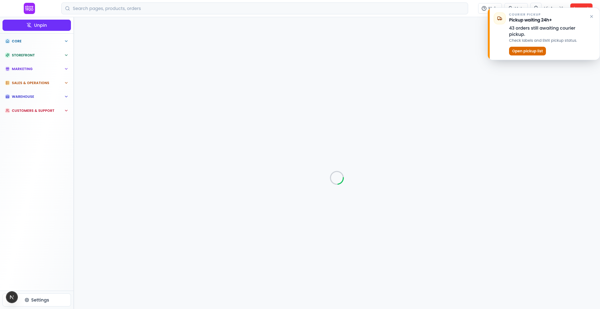
This is the Featured Sections screen.
What to do
Open Featured Sections. The address is /store/category-slider.
Add or reorder a collection.
Set the content of that section.
Save and check the homepage order from top to bottom.
What you will see on the screen
01
Which collections are featured
Only collections you include appear in this area. Order is the order on the homepage.
02
Section content
The heading and the items inside that collection. An empty collection renders as a gap, so either fill it or remove it.
Guide / Storefront
Storefront
Featured Products
This is the Top Picks block. Name it, then fill it by hand, by category, or by tags. Customers only see products that are published.
Go to/store/featured-products
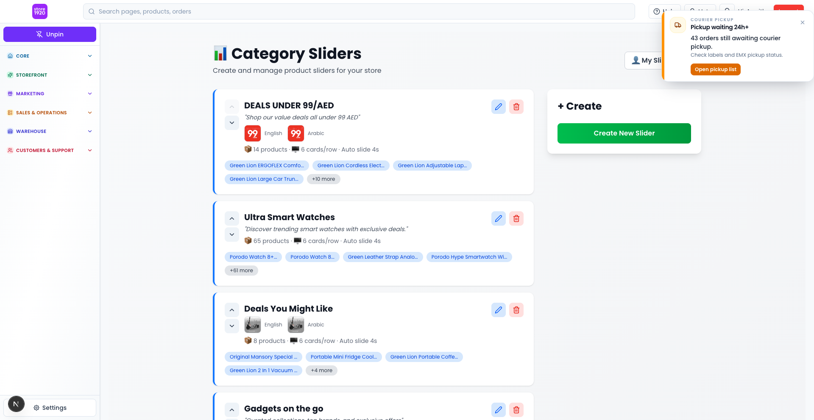
This is the Featured Products screen.
What to do
Open Featured Products.
Set the section title.
Choose manual products, a category rule, or a tag rule.
Save and confirm those products are published. Unpublished items will not show to shoppers.
What you will see on the screen
01
Section title
The heading above Top Picks. Change it when the campaign changes. The products do not change until you edit the source.
02
Manual products
A fixed list you choose yourself. You control the order. A product stays in Top Picks until you remove it, even if its discount ends. Use this when the set should not change on its own.
03
Category or tag rules
The block refills from products in that category or with those tags. New products that match can appear without another edit. Products that lose the tag drop out.
Guide / Storefront
Storefront
Recommended Products
This is the list in the Recommended tab. You pin the products yourself. It is not an automatic best-seller list.
Go to/store/explore-interests
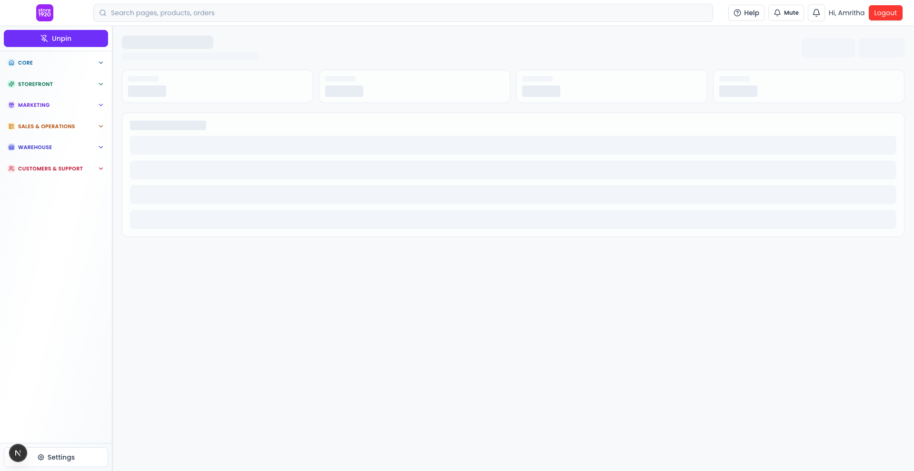
This is the Recommended Products screen.
What to do
Open Recommended Products at /store/explore-interests.
Search the catalog.
Pin the products that should appear in the Recommended tab, in the order you want.
Save and open the public Explore area.
What you will see on the screen
01
Pinned products
Only pinned, published products show in that tab. If you unpin one, it leaves the tab and stays in the catalog. If the tab looks empty, nothing is pinned or the pinned items are unpublished.
Guide / Storefront
Storefront
Mobile Features
This is the home screen of the mobile app, not the website. Each block has its own editor and a preview. The website homepage is edited on the other storefront pages.
Go to/store/mobile-features
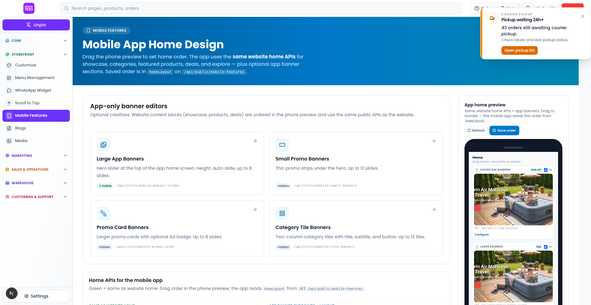
This is the Mobile Features screen.
What to do
Open Mobile Features.
Pick the block you want to change: large banners, small promos, promo cards, or category tiles.
Edit that block, watch the preview, and save.
What you will see on the screen
01
Large App Banners
The hero slider at the top of the app home. Height, auto-slide, and up to 8 slides. Open its editor for the images and links.
02
Small Promo Banners
Thin strips under the hero. Up to 12 slides. Use them for short offers that should not replace the hero.
03
Promo Card Banners
Larger cards, up to 8 slides. A card can show an Ad badge when the slide is an advertisement.
04
Category Tile Banners
A two-column grid. Each tile has a title, subtitle, and button. Up to 12 tiles. The button should open a category or a campaign page.
Guide / Storefront
Storefront
Large App Banners
This is the big slider at the top of the app home screen. People see the first slide immediately. Keep it to 8 slides.
Go to/store/mobile-features/banners
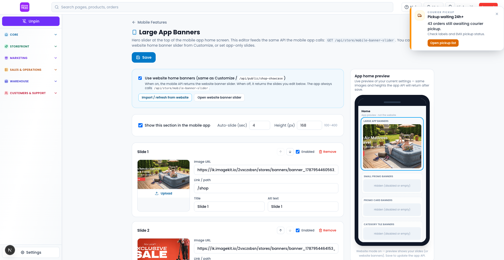
This is the Large App Banners screen.
What to do
Open Large App Banners.
Add a slide with an image and a link.
Set the height so the image is not cropped badly on a phone.
Turn auto-slide on or off. Stay within 8 slides. Save.
What you will see on the screen
01
Slide images and links
The picture and the screen it opens in the app. The first slide is the one that matters most.
02
Height
How tall the hero is. Too tall pushes products below the fold. Too short crops the artwork.
03
Auto-slide
Advances without a tap. Turn it off for a single announcement that should stay put.
04
Slide limit
Up to 8 slides. Remove an old campaign before you add a new one if you are already at 8.
Guide / Storefront
Storefront
Small Promo Banners
These are the thin strips under the app hero. Use them for a short offer, not for the main campaign picture. You can have up to 12.
Go to/store/mobile-features/small-banners
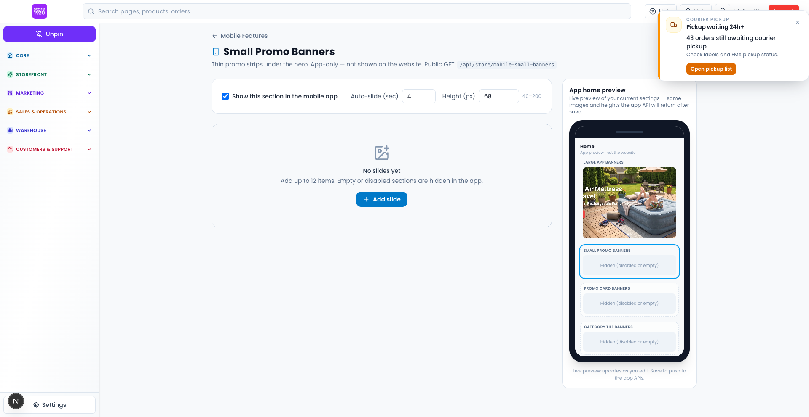
This is the Small Promo Banners screen.
What to do
Open Small Promo Banners.
Add a slide with an image, a link, and a position in the order.
Keep the set at 12 slides or fewer. Save and check the app home preview.
What you will see on the screen
01
Slides
Up to 12. Each one is a thin image. Wide text inside the image is hard to read, so keep the words short.
02
Image, link, and order
The picture, where a tap goes, and the sequence. The first strip is the one directly under the hero.
Guide / Storefront
Storefront
Promo Card Banners
These are the larger cards on the app home. Use one when a thin strip is not enough. Turn on the Ad mark only if the card is a paid placement.
Go to/store/mobile-features/promo-cards
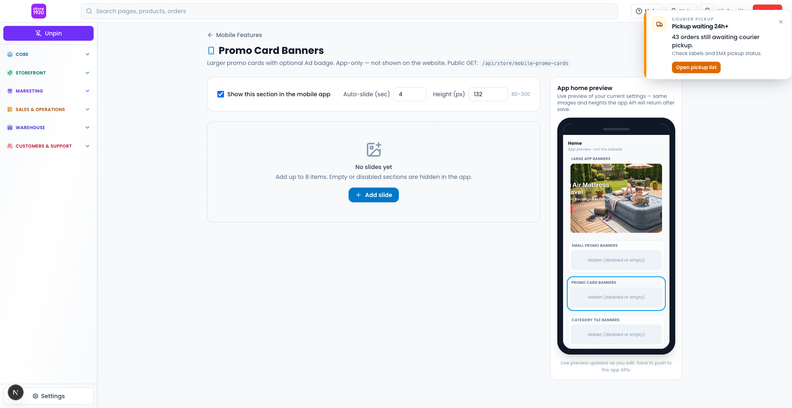
This is the Promo Card Banners screen.
What to do
Open Promo Card Banners.
Add up to 8 cards.
Turn on the Ad badge only when the card is a paid or sponsored placement.
Save and scroll the app home preview.
What you will see on the screen
01
Cards
Up to 8 slides. Each card is larger than a small promo, so one strong offer is better than eight weak ones.
02
Ad badge
Prints an Ad mark on that card. Use it when the placement is an advertisement. Leave it off for your own promotions.
Guide / Storefront
Storefront
Category Tile Banners
These are the two-column tiles on the app home. Each tile has a title, a subtitle, and a button that should open a category. You can have up to 12.
Go to/store/mobile-features/tile-banners
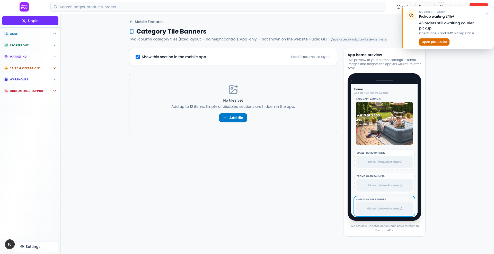
This is the Category Tile Banners screen.
What to do
Open Category Tile Banners.
Add a tile with a title, subtitle, button label, and destination.
Stay within 12 tiles. Put the most important categories first.
Save and tap a tile in the preview.
What you will see on the screen
01
Title, subtitle, and button
The words on the tile. The button should say where it goes, such as Shop now, and the link should open that category.
02
Tile limit
Up to 12 tiles in two columns. More than that is not saved as extra tiles. Remove a quiet category before adding a new one.
Guide / Storefront
Storefront
Blogs
Write the articles that show on the public blog. A draft stays hidden. Published posts show on /blogs. A new post starts at /store/blogs/new.
Go to/store/blogs
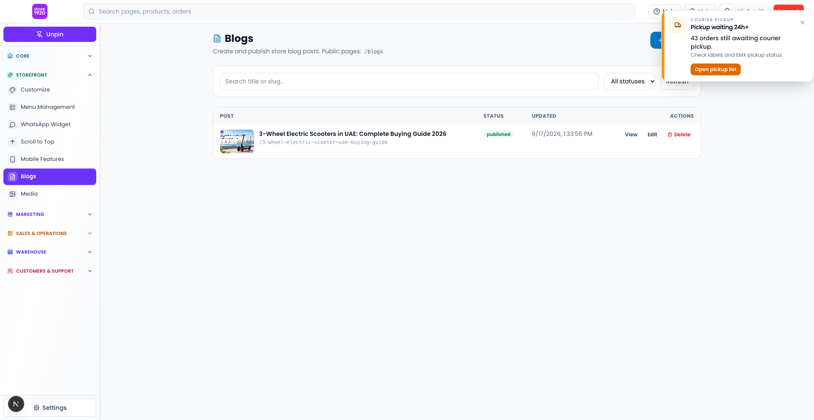
This is the Blogs screen.
What to do
Open Blogs.
Create a post or open an existing one.
Write the title and the rich description. Add headings and images.
Set the publish state. Only published posts appear on /blogs.
What you will see on the screen
01
Post list
Every article. Open one to edit it. Create starts a new post at /store/blogs/new.
02
Rich description
Headings, paragraphs, fonts, and images. Images can be reordered. This body is what the public article shows.
03
Publish state
Draft stays off the public blog. Published appears on /blogs. Unpublish when a post should come down without being deleted.
Guide / Storefront
Storefront
Menu Management
This is the full header. Logo, search, the categories button, and the buttons next to LAST CHANCE. If you uncheck an action, customers do not see it, even if the page still exists.
Go to/store/menu-management
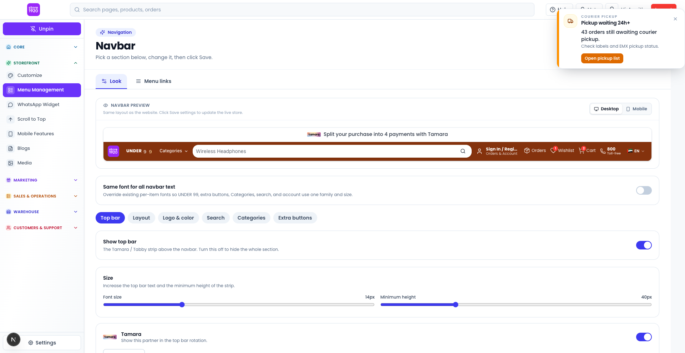
This is the Menu Management screen.
What to do
Open Menu Management.
Set the logo and names under branding.
Turn each navbar action on only if it should show.
Adjust search width, the categories button, and sticky behavior. Save and reload the public shop.
What you will see on the screen
01
Navbar branding
Logo and the names in the header. This is the mark shoppers see, not the account photo in Settings.
02
Navbar actions
Each action can be shown or hidden. Unchecked means hidden on the live shop even if the page still exists.
03
Buttons next to LAST CHANCE
The extra header buttons beside that label. Edit the label or hide the button when the campaign ends.
04
Sticky header and categories button
Sticky keeps the header on screen while scrolling. The categories button opens the category menu. Turn the button off if categories should not be a header control.
05
Search field and header width
How wide the search box is inside the header. Make it wide enough to type a product name without covering the logo.
Guide / Storefront
Storefront
Media
This is the library of pictures already uploaded. Open one when a product is showing the wrong photo and you need to see which file it is using.
Go to/store/media
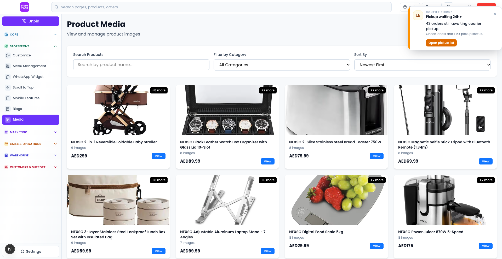
This is the Media screen.
What to do
Open Media.
Browse or search for the image.
Open it to confirm it is the file a product or banner is using.
What you will see on the screen
01
Browse uploaded images
The files already stored for the shop. Uploading a new product photo from Add Product adds it here.
02
Open a product image
Inspect one file. Use this when a product shows the wrong photo and you need to see which file is attached.
Guide / Marketing
Marketing
Promotional Offers
These are special discounts for particular customers, usually for a limited time. Filter the list by All, Active, Expired, or Used. An expired offer stays in the list, but customers no longer get it.
Go to/store/personalized-offers
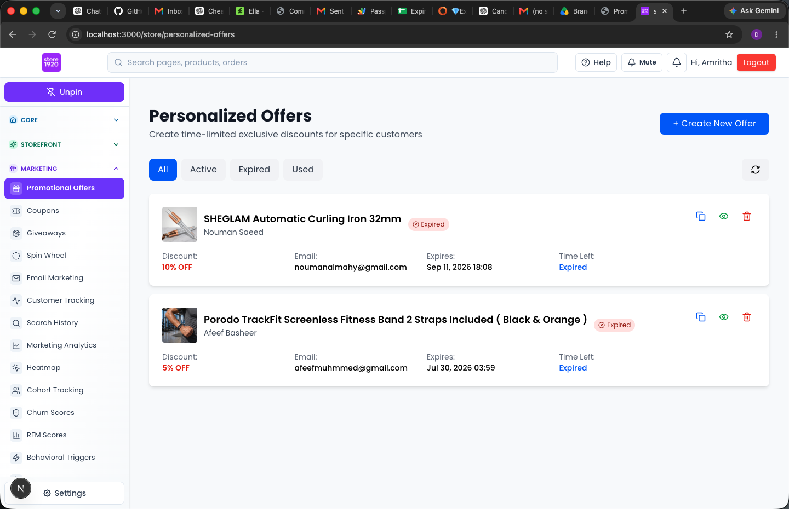
This is the Promotional Offers screen.
What to do
Open Promotional Offers.
Create an offer or edit an existing one.
Set the audience and the products.
Save, then browse the shop as a matching customer if you can, and confirm the offer appears.
What you will see on the screen
01
Create and edit
The offer itself: what the shopper is being promised. An inactive offer is kept here but is not shown.
02
Who sees it
The shoppers the offer is aimed at. A rule that matches nobody shows the offer to nobody.
03
Which products
The items the offer applies to. Products outside the list stay at their normal price.
Guide / Marketing
Marketing
Coupons
These are the codes customers type at checkout. Set the word, the discount, the dates, and what it applies to. Try it in a test order before you share the code.
Go to/store/coupons
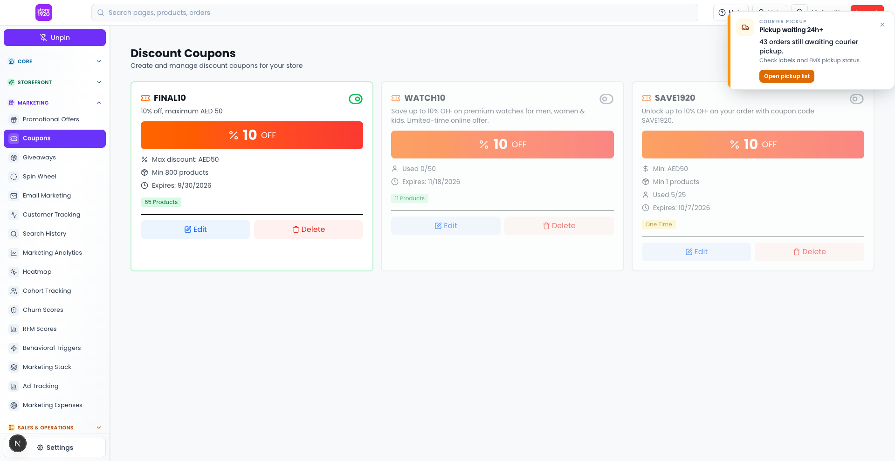
This is the Coupons screen.
What to do
Open Coupons.
Create a code customers can type. Avoid spaces.
Choose percentage or a fixed amount, then the value.
Set the start and end, any usage limit, and which products or orders qualify. Save and place a test order.
What you will see on the screen
01
Code, discount type, and amount
The word the customer enters, whether the discount is a percent or a fixed amount, and the size of the discount. A 10 percent code reduces eligible items by 10 percent. A fixed code subtracts that amount.
02
Active dates and usage limits
Before the start date the code is rejected. After the end date it is rejected. A usage limit stops the code after that many redemptions.
03
What the code applies to
All orders, or only certain products. If a test checkout does not discount, the cart did not match this rule.
Heads upA code and an automatic sale price can both exist. Check a test cart so the customer is not discounted twice unless you intend that.
Guide / Marketing
Marketing
Giveaways
Set up a giveaway: the prize, and the dates it runs. Outside those dates it should stop, even if the campaign is still in the list.
Go to/store/giveaways
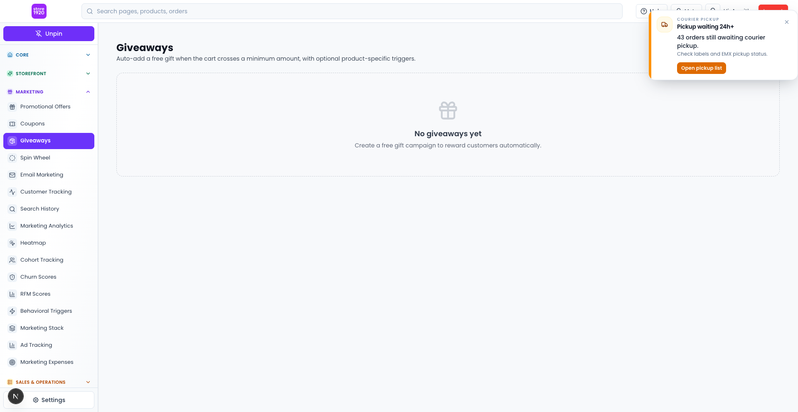
This is the Giveaways screen.
What to do
Open Giveaways.
Create the campaign and name the prize or the product that is included.
Set the start and end.
Save. When the window ends, the campaign should stop even if you leave the record in the list.
What you will see on the screen
01
Campaign details
The name and the terms the team is running. Shoppers should see a clear prize, not an internal note.
02
Prize or included product
What the customer can receive. Link a real, in-stock product if the prize ships.
03
Active window
The start and end dates. Inside the window the giveaway can be offered. Before the start and after the end it should stop, even if the campaign record is still in the list.
Guide / Marketing
Marketing
Spin Wheel
This is the wheel customers can spin on the shop. Turn it on only when the prizes are ready. Create the coupon first, or a winning slice has nothing to give.
Go to/store/spin-wheel
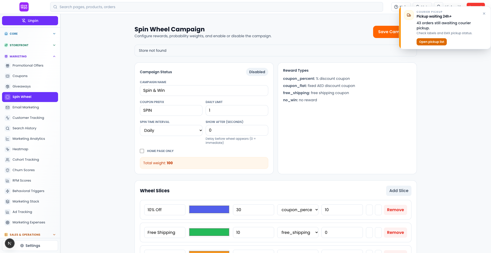
This is the Spin Wheel screen.
What to do
Open Spin Wheel.
Turn the campaign on only when the prizes are ready.
Edit each slice: the label, the chance, and the coupon reward.
Set who can spin and how often. Save and open the shop in a private window to see the wheel.
What you will see on the screen
01
Enable the campaign
Shows or hides the wheel. Off means shoppers do not get the popup, even if slices are filled in.
02
Prize slices
The labels on the wheel and the coupon each winning slice gives. Create those coupons first, or the reward has nothing to apply at checkout.
03
Who can spin and how often
Stops the same shopper spinning forever. Set a limit you can afford, because each win can create a discount.
Guide / Marketing
Marketing
Email Marketing
Send a promotion to customers from here. Send a test to yourself first. These emails use the promotional mailbox in Settings, Preferences, not the mailbox that sends order receipts.
Go to/store/email-marketing
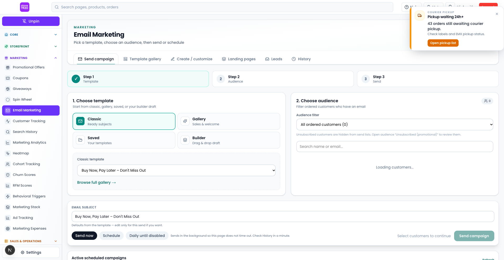
This is the Email Marketing screen.
What to do
Confirm promotional SMTP is saved under Settings, then Preferences.
Open Email Marketing.
Choose the audience and write the message, or start from a template.
Send a test to yourself before you send to customers.
What you will see on the screen
01
Campaign list and a new send
Past campaigns and the button to start one. Opening an old campaign shows what was sent. It does not resend until you send again.
02
Audience and message
Who receives it and the body they read. A empty audience sends nothing. Check the count before you send.
03
Which mailbox
Promotional mail uses promotional SMTP. Order confirmations stay on transactional SMTP. If a campaign fails, fix the promotional mailbox first.
Guide / Marketing
Marketing
Customer Tracking
See what a known customer looked at. Use it before you decide on a coupon or an email. People with no account are harder to match to a row.
Go to/store/customer-tracking
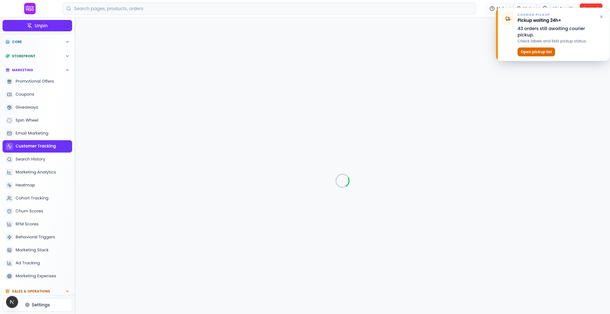
This is the Customer Tracking screen.
What to do
Open Customer Tracking.
Find a customer.
Read their recent visits and product interest before you decide on a coupon or an email.
What you will see on the screen
01
Customer activity list
Visits and product interest for known shoppers. Use it to see what someone looked at before they bought or left.
02
Filters
Narrow the list to recent behavior so you are not reading old visits. The list is a record. Editing it does not change the shop.
Guide / Marketing
Marketing
Marketing Analytics
See where people drop off between visiting and paying, plus which products and searches are popular. This page only reports. It does not change prices.
Go to/store/marketing-analytics
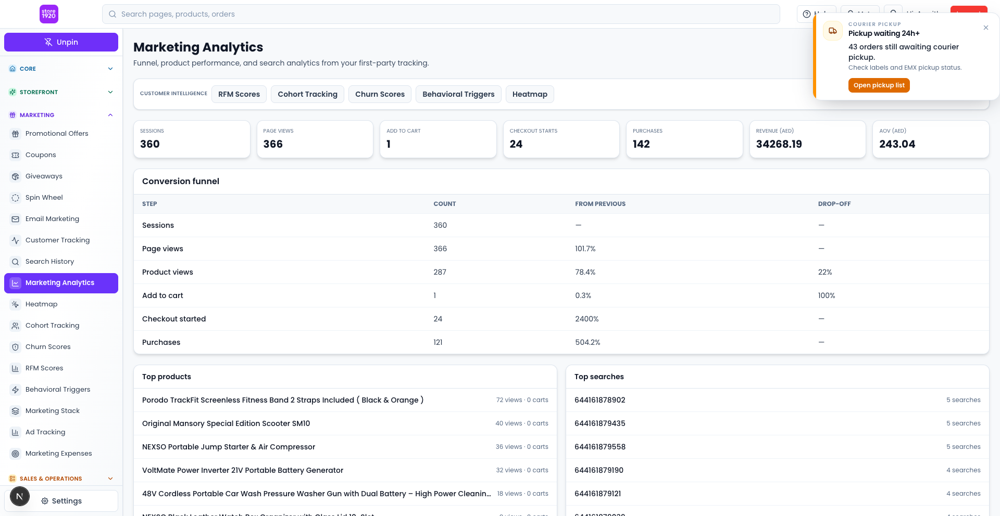
This is the Marketing Analytics screen.
What to do
Open Marketing Analytics.
Read the funnel from the top step to purchase.
Use top products and top searches to decide what to feature or restock.
What you will see on the screen
01
Conversion funnel
The steps shoppers take and where they drop off. A steep drop at checkout means people reach the cart and do not pay. Compare it with Abandoned Checkout.
02
Top products
What is being viewed or bought most. Feature these, or watch stock if they are selling through.
03
Top searches
The words shoppers type. If a search has demand and no product, the catalog is missing that item or the name does not match the word.
Guide / Marketing
Marketing
Heatmap
See what people actually click. A quiet button is a layout problem. Clicks are not orders. Check Marketing Analytics before you change a campaign.
Go to/store/heatmap
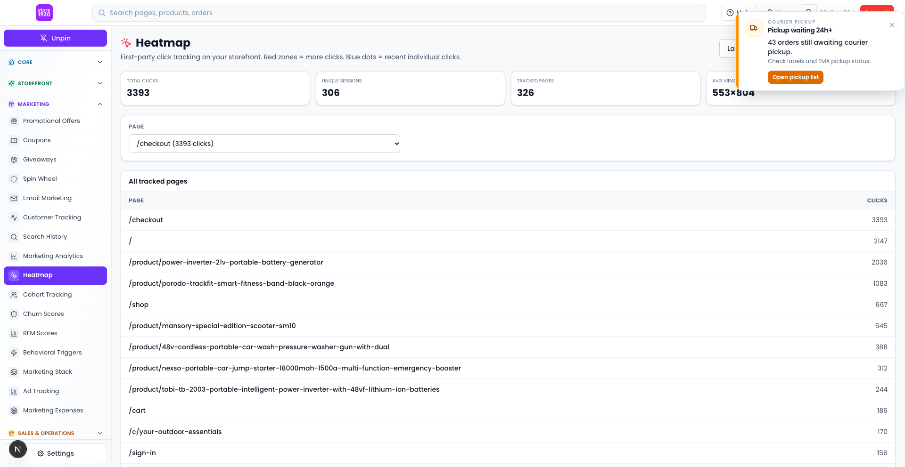
This is the Heatmap screen.
What to do
Open Heatmap.
Look at all tracked pages.
Open the top clicked elements to see what shoppers use.
Read the note on the page about how the tracking is collected before you treat a quiet page as a failure.
What you will see on the screen
01
All tracked pages
Pages where clicks are recorded. A page that is not tracked will look empty even if people visit it.
02
Top clicked elements
Buttons and links that receive the most clicks. A call to action that nobody clicks is a layout problem, not a catalog problem.
03
How tracking is collected
The short explanation on the screen of what is stored. Clicks are not orders. Pair this with Marketing Analytics before you change a campaign.
Guide / Marketing
Marketing
Cohort Tracking
Group customers by the month they first bought or signed up, then see how many of that group come back. One row is a group, not one person.
Go to/store/cohorts
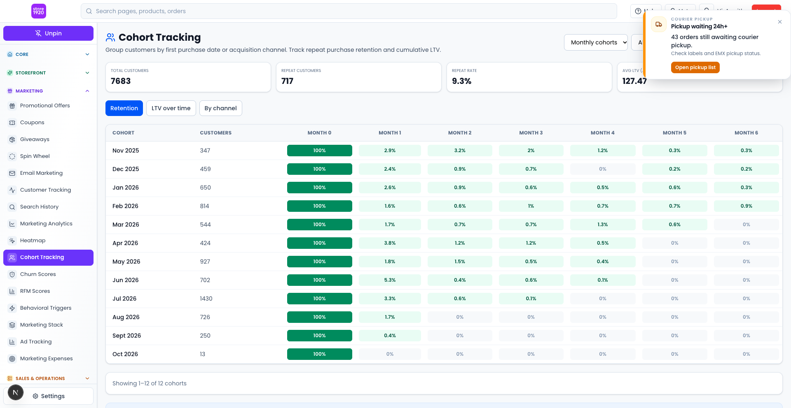
This is the Cohort Tracking screen.
What to do
Open Cohort Tracking.
Read a row as one starting period, such as a month of first orders.
Read across to see how many of those customers returned in later periods.
What you will see on the screen
01
Cohort table
Each row is a group that started together. It does not list every customer by name. Use Customers if you need one person.
02
Retention
The later columns are how many of that group bought or returned again. A column of zeros means that group did not come back in that period.
Guide / Marketing
Marketing
Churn Scores
This list ranks customers who may be about to stop buying. A high score means they have gone quiet. The page does not email them. You decide, usually with a coupon or a campaign.
Go to/store/churn-scores
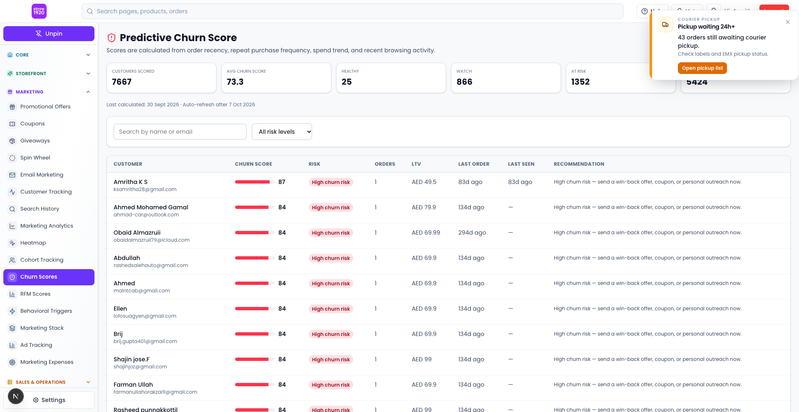
This is the Churn Scores screen.
What to do
Open Churn Scores.
Sort so the highest-risk customers are at the top.
Pick a group to win back, then build the offer in Coupons or Email Marketing.
What you will see on the screen
01
Score list
One score per customer. Higher means more likely to stop. The number is a guide, not a promise they have already left.
02
Sort
Put the highest risk first so the team does not start with customers who are still buying regularly.
Guide / Marketing
Marketing
RFM Scores
Each customer gets a simple grade: how recently they bought, how often, and how much they spent. Use that grade when you pick who gets a coupon or an email, instead of mailing everyone.
Go to/store/rfm-scores
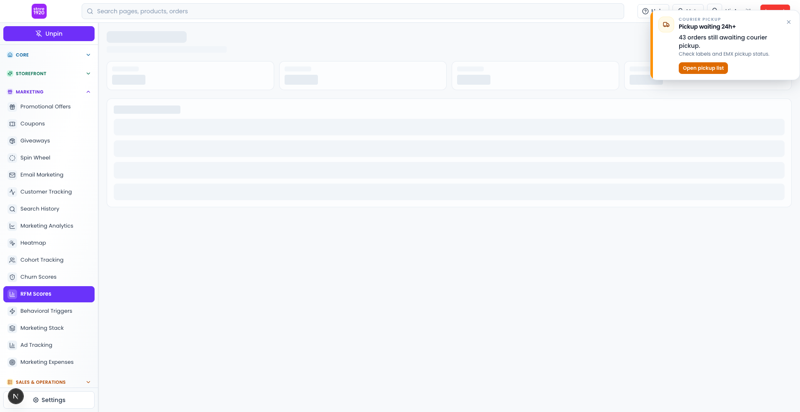
This is the RFM Scores screen.
What to do
Open RFM Scores.
Read the segment next to a customer.
Target a segment from Coupons or Email Marketing instead of mailing the whole list.
What you will see on the screen
01
Recency, frequency, and monetary
Recent buyers, frequent buyers, and high spenders score higher on those parts. A customer can be recent but low spend, or valuable but quiet.
02
Segment
The label that combines the three scores. Use that label as the audience. The score itself does not change prices.
Guide / Marketing
Marketing
Behavioral Triggers
Send a message or an offer automatically when someone does something, like leaving checkout. Try the action yourself so you know it fires once.
Go to/store/behavioral-triggers
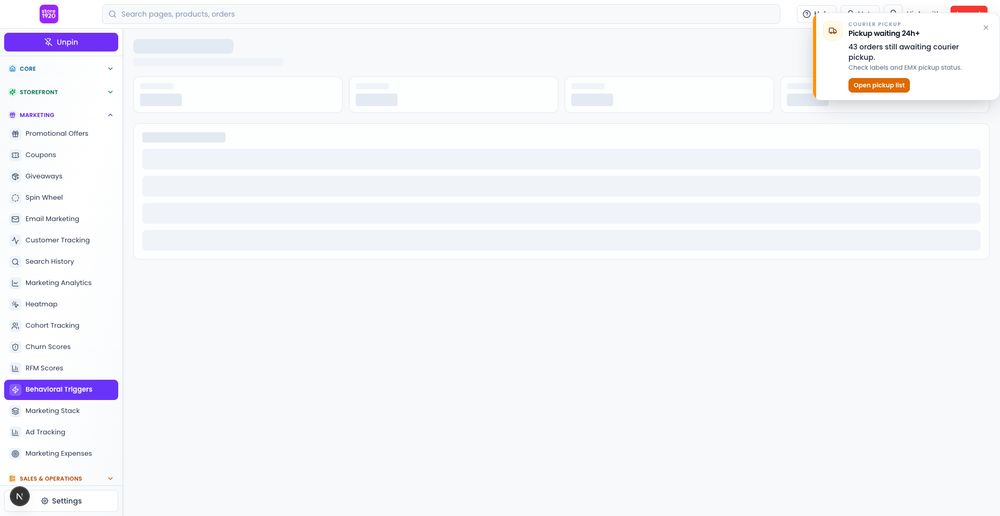
This is the Behavioral Triggers screen.
What to do
Open Behavioral Triggers.
Pick the event that should start the action.
Set the message or offer that fires.
Save, then perform that action yourself on the shop to confirm it fires once.
What you will see on the screen
01
Trigger event
The shopper action that starts the rule. Leaving checkout is different from only viewing a product. Pick the event you actually want.
02
Message or offer
What the shopper receives. If the offer is a coupon, that coupon must exist and be active.
Guide / Marketing
Marketing
Marketing Stack
See which outside marketing tools are actually connected. A tool that is listed but not finished will not receive store data.
Go to/store/marketing-stack
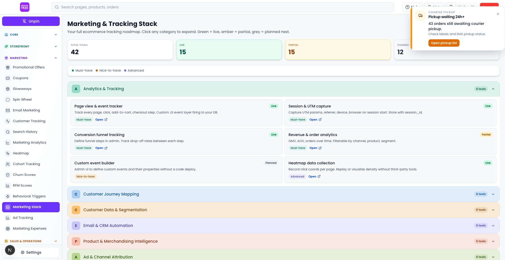
This is the Marketing Stack screen.
What to do
Open Marketing Stack.
Read the status of each tool.
Open a tool that is not finished and complete its setup.
What you will see on the screen
01
Connected tools and status
A connected tool can receive or send data. A disconnected one will not, even if you entered a campaign name somewhere else.
02
Finish setup
Opens that tool's remaining steps. Status stays incomplete until those steps succeed.
Guide / Marketing
Marketing
Ad Tracking
This connects an order to the ad that brought the customer. It includes the Meta pixel already on the shop. It does not change the price they pay.
Go to/store/ads-tracking
This is the Ad Tracking screen.
What to do
Open Ad Tracking.
Confirm the pixel and conversion settings.
Add campaign identifiers you want stored with orders.
Place a test order from an ad click if you need to confirm the identifier lands on the order.
What you will see on the screen
01
Pixel and conversion settings
The Meta pixel on the storefront and the conversion events you record. A missing pixel means ad platforms will not see the purchase.
02
Campaign identifiers
Values stored with the order so you can see which campaign produced it. They do not change the price the customer pays.
Guide / Marketing
Marketing
Marketing Expenses
Write down what you spent on ads, so profit in the sales report is honest. Pull Meta spend, or type a cost yourself. A cost on the wrong date lands in the wrong month.
Go to/store/marketing-expenses
This is the Marketing Expenses screen.
What to do
Open Marketing Expenses.
Connect Meta if you want spend pulled in, or skip that and add costs by hand.
Enter the amount, the date, and the channel.
Open Sales Report afterward and confirm profit reflects the cost.
What you will see on the screen
01
Connect Meta account
Lets the store read Meta spend. Connecting does not run ads. It only imports cost.
02
Add a marketing expense
A manual cost: amount, date, and channel. Use this for spend that does not come from Meta, or to correct a missing day.
03
Profit
Sales Report uses these costs when it calculates profit. A cost entered on the wrong date lands in the wrong report period.
Guide / Sales & Operations
Sales & Operations
Orders
This is the list of customer orders. A green number on the sidebar means some are still unread. Open an order to change its status, see the customer, or open the invoice. The Import / Export button on this page is where you bring in a WordPress file, update many statuses from Excel, or download the list.
Go to/store/orders
This is the Orders screen.
What to do
Open Orders. Start with unread orders if the sidebar count is green.
Use All Orders, Today, or Last 7 Days, or set From and To. Dates and times are Dubai time.
Click Import / Export. The extra fields open under the date row. Click it again to hide them.
To bring in old shop orders, choose the WordPress CSV and click Import CSV. Do not open that file in Excel first.
To change many statuses at once, choose the Excel file and click Update status from Excel. Read the confirm box before you continue.
To download the list, pick Export Type, then Export CSV or Export Excel. Tick orders first if the file should contain only those rows.
What you will see on the screen
01
Import / Export
Opens and closes the file tools. It does not download anything by itself. The label switches to Hide Import / Export while the panel is open, or while a file is still importing.
02
Date range
All Orders, Today, and Last 7 Days are shortcuts. From date, From time, To date, and To time make a custom range. Clear dates removes it. The range uses Dubai time. An order at or after the To moment is left out. Export uses the orders in this range, unless you have ticked specific rows.
03
Export Type
Limits the download. All is every order in the current list. Cancelled, Refunded, and Paid are status groups. COD, Card, Tabby, Tamara, and Wallet keep only that payment method. Set this before you click Export CSV or Export Excel.
04
Import Orders CSV
A WordPress or WooCommerce orders export, and it must stay a .csv file. In WordPress that export is WooCommerce, then Rohith Order Confirm, then Export all orders. Do not open the file in Excel and save it again. Excel rewrites the dates, and the orders then land on the wrong day. Each order keeps the date and time from the file. Choose the file, then click Import CSV. A bar shows how far the import has got.
05
Bulk status Excel
A spreadsheet that changes status on orders that are already here. It does not create new orders. The file can be .xlsx, .xls, or .csv. It needs a ShipperRef column with the order id, and a Status column. Status values the screen understands include Delivered, Shipped, Canceled, RTO, and RETURNED. Choose the file, then click Update status from Excel. A confirm box tells you how many orders will change. Customers get an email when a status actually changes.
06
Undo
Sits next to Update status from Excel. It stays off until a bulk status update has just run. After that it is available for 30 minutes and shows the time left. Click it to put those orders back to the status they had before the file. When the time runs out, the button says Undo off and the old statuses are not restored from here.
07
Export CSV and Export Excel
Download the current list. If no orders are ticked, the file follows the date range and Export Type. If you tick orders, the button says Export Selected CSV or Export Selected Excel and the file contains only those orders. A line under the buttons tells you how many are selected.
08
PDF and pickup files
These sit beside Import / Export and do not need the panel open. Export today orders (PDF) downloads today's orders as a PDF. Packed orders PDF is the packed list. Export today pickup Excel is the EMX pickup file for today, or only the ticked orders if you have a selection.
09
The order itself
Click a row to open it. Change the fulfillment status there so tracking matches the parcel. The invoice and the customer name, phone, and address are on that order. Shipping prices and payment methods are not edited from this list.
Heads upImport the WordPress file as CSV. If you open it in Excel and save, the dates change and orders show up on the wrong day.
Guide / Sales & Operations
Sales & Operations
Pickup list
These are the orders the courier should collect. An amber number on the sidebar means some pickups are late. Do the late ones first.
Go to/store/todays-pickup
This is the Pickup list screen.
What to do
Open Pickup list.
Work the overdue rows first if the sidebar count is amber.
Hand today's rows to the courier and update the order when the pickup actually happens.
What you will see on the screen
01
Today's pickup rows
Orders scheduled for pickup today. This is a work list, not a second copy of every historical order.
02
Overdue pickups
Pickups that missed their time. They are highlighted so they are not buried under new orders. Clear them before you treat the day as finished.
Guide / Sales & Operations
Sales & Operations
Orders by Product
See demand by product instead of by order. Useful when you are buying stock or packing many units of the same item.
Go to/store/orders-by-product
This is the Orders by Product screen.
What to do
Open Orders by Product.
Read the quantity sold or waiting for each product.
Open the orders that contain a product when you need the customer or the shipment.
What you will see on the screen
01
Product totals
How many units of each product sit across orders. One busy product can be hidden inside many small orders. This view adds them up.
02
Open the orders
Jumps from the product total to the individual orders that contain it, so you can pack or chase a shipment.
Guide / Sales & Operations
Sales & Operations
Trash
Deleted items wait here so you can put them back. Check trash before you create the same product again. If it is not here, it cannot be restored from this screen.
Go to/store/trash
This is the Trash screen.
What to do
Open Trash.
Find the deleted product, order, or other record.
Restore it. It returns to the live list. If you do not restore it, it stays out of the shop.
What you will see on the screen
01
Review deleted items
Records that were removed from the live list and can still be restored. Search by the name or SKU. If it is not here, it was not kept in trash and cannot be brought back from this screen.
02
Restore
Puts the item back into the live catalog or order list. Restoring a product does not by itself mark it featured or in stock. Check those next.
Guide / Sales & Operations
Sales & Operations
Abandoned Checkout
Someone started checkout and did not pay. You can see who it was and what was in the cart. This page does not take the payment. Check Orders first, in case they paid later.
Go to/store/abandoned-checkout
This is the Abandoned Checkout screen.
What to do
Open Abandoned Checkout.
Open a session to see who it was and what was in the cart.
Follow up outside the dashboard, or with a coupon, if you want them to finish the order.
What you will see on the screen
01
Unpaid sessions
Checkouts with no successful payment. A later paid order for the same person may still exist in Orders. Check before you send a reminder.
02
Customer and cart
The contact details and the items they had selected. Prices can change after they left, so the follow-up should match the current price.
Guide / Sales & Operations
Sales & Operations
Shipping
Set what customers pay for delivery, and the largest order that can still use cash, card, Tabby, or Tamara. Turning a method off here hides it at checkout. A maximum of 0 means no limit, not a limit of zero.
Go to/store/shipping
This is the Shipping screen.
What to do
Open Shipping.
Turn Enable Shipping Charges on if customers should pay a delivery fee.
Add at least one delivery option with a name, a price, and estimated days.
Set free-shipping rules, express, and the payment limits. Save, then run a test checkout above and below each limit.
What you will see on the screen
01
Enable Shipping Charges
The master switch for delivery fees. Off means you are not charging the standard delivery fee from this screen. On requires at least one delivery option or the save is rejected.
02
Delivery Options
One or more methods, such as standard delivery. Each option has a name, a price rule, and estimated delivery days. The name is what the customer reads at checkout. You need one option enabled before you can save while charges are on.
03
Free Shipping by Product
Products that always ship free, even when the cart is under the free-shipping threshold. Add a product here only when that item should never carry the standard fee.
04
Free Shipping Threshold
The minimum order amount that waives the standard fee. A cart below this amount pays the delivery option price, unless every item is in the free-by-product list.
05
Regional Delivery Fees
Optional local and regional fees. Fill them only when delivery inside one area should cost a different amount from the standard option. Leave them empty to keep a single price.
06
Express Shipping
An extra, faster option. Set the extra fee and the delivery-days label, such as 1-2 or Next Day Delivery. The label is a promise, so match it to the courier you really use.
07
Cash on Delivery
Turns COD on or off, sets a processing fee, and sets the maximum order total. A fee of 0 means no extra COD charge. A maximum of 0 means unlimited. Above the maximum, checkout hides COD.
08
Online Payment Methods
Card, Tabby, and Tamara. Each can be on or off, and each can have a maximum order total. 0 means unlimited. These are the same switches as Settings, then Payments, plus the caps, which live only here.
Heads upChange one limit, save, and test that total. A maximum of 0 means no cap, not a maximum of zero dirhams.
Guide / Sales & Operations
Sales & Operations
Alerts
This is the short notice customers see at checkout, for example a delivery delay. It is not a homepage banner. If it is switched off, checkout stays quiet even if you wrote a message.
Go to/store/alerts
This is the Alerts screen.
What to do
Open Alerts.
Choose where the alert is visible.
Write the message in the words customers should read.
Check the live preview, save, and open checkout.
What you will see on the screen
01
Visibility
Where the notice appears. If it is off, checkout does not show it, even if the text is filled in.
02
Alert content
The message itself. Keep it short. A policy that belongs on the returns page should be linked or summarized, not pasted as a long essay.
03
Live preview
Shows the notice as checkout will draw it. If the preview wraps badly, shorten the text before you save.
Guide / Sales & Operations
Sales & Operations
Payment Security
Card numbers are typed on the payment company's page, not stored here. Use this screen to request a card refund through Stripe. Cash on delivery refunds are handled on the order or in Returns.
Go to/store/payment-security
This is the Payment Security screen.
What to do
Open Payment Security.
Read the posture notes so the team knows what is stored here and what stays at the gateway.
When a card payment must be returned, submit a Stripe refund from this screen and keep the review note.
What you will see on the screen
01
What is stored
The store keeps the order and the payment reference. The gateway keeps the card. Do not ask a customer to send a card number by email or ticket.
02
Fraud and refunds
Review notes for a refund: why it was requested and who approved it. Write the note before you submit, so the log explains the money movement.
03
Request Stripe refund
Sends the refund to Stripe against that payment. It does not refund a cash-on-delivery order. Use the order and the returns queue for those.
Guide / Sales & Operations
Sales & Operations
Returns & Replacements
Customers send return, refund, and replacement requests here. Open one, read the reason, then approve it, reject it, or mark it replaced.
Go to/store/return-requests
This is the Returns & Replacements screen.
What to do
Open Returns & Replacements.
Work the new requests first.
Open one, read the reason and the items, then approve, reject, or mark it replaced.
The customer should see a status that matches what you decided.
What you will see on the screen
01
Request queue and status
Every return, refund, or replacement request, and where it stands. This queue is not the same as cancelling an order that has not shipped. Handle unshipped cancellations from the order when that is the right action.
02
Approve, reject, or replace
Approve when the return meets the policy. Reject when it does not, and the reason should be something you can explain. Mark replaced when a new unit is the outcome instead of money back.
Guide / Sales & Operations
Sales & Operations
Balance
This is the store balance, and the lines that add up to it. It is not profit. Profit is on the Sales Report.
Go to/store/balance
This is the Balance screen.
What to do
Open Balance.
Read the current balance.
Open recent movements if the total does not match what you expected.
What you will see on the screen
01
Current balance
The store payout position as of this screen. It is not profit. Profit, refunds, and product cost are on the Sales Report. Use this number when you want to know what the balance shows right now.
02
Recent movements
The lines that add up to that total. A payout, a refund, or a fee shows here as its own line.
Guide / Sales & Operations
Sales & Operations
Sales Report
This is where you see if the shop made money. Pick the dates, then read what customers paid, what it cost you, and what is left. The page opens on This Month. Cancelled orders never appear. A payment that failed, or an order still waiting to be paid, stays in the list with the amount crossed out, and it is left out of the totals. Money already refunded on a completed return is taken off that order before profit is worked out.
Go to/store/sales-report
This is the Sales Report screen.
What to do
Open Sales Report.
Leave the date on This Month, or switch it to Today, Yesterday, This Week, Last Week, Last Month, This Year, Last Year, or Custom Range.
On Custom Range, fill in both dates. If either box is empty, the report is not limited to those dates.
Read the four cards across the top: Total Revenue, Total Costs, Total Profit, and Avg Order Value.
Under those, check COD Orders, Payment Success, and Failed Orders.
Scroll to the order table if one order looks wrong. Green is money left. Red is a loss. A failed row says Excluded.
Click Export Excel when you need this same period in a spreadsheet.
What you will see on the screen
01
Date Range
Chooses which orders are in the report. This Month runs from the first of the month through today. This Week starts on Sunday. Custom Range shows a start date and an end date. Both have to be filled, or the page is not actually filtered by those dates.
02
Marketing Expenses
Opens the screen where you record ad spend. It does not change the numbers until you save a cost there and come back. Spend that falls inside the dates you picked is added into Total Costs and taken out of profit.
03
Product Pricing
Opens Product Cost. The shop price does not change from this report. Profit uses the purchase cost saved on that screen. A product with no cost is treated as zero, so the profit looks higher than it really is.
04
Export Excel
Downloads a spreadsheet of this same date range. Wait until it says the file is ready, then open it. It is a snapshot from the moment you clicked. Orders placed after that are not in the file.
05
Total Revenue
What the successful orders brought in for these dates, after refunds. The line under the amount is how many orders counted. If some payments failed, it also says how many were left out.
06
Total Costs
What those sales cost you. The lines under the number split Products and Delivery. Product cost comes from Product Cost. Delivery is the shipping fee on the order. Ad spend for these dates is inside the big number too, even when it also has its own card further down.
07
Total Profit
Revenue minus those costs. The card stays green when you made money. It turns red and says Total Loss when the period lost money. The percentage is the margin, profit divided by revenue. A thin margin means cost or refunds ate most of the sale.
08
Avg Order Value
Total revenue divided by the orders that counted. The line under it is the average profit on those same orders. Failed orders are not in either average.
09
COD Orders
Cash on delivery that counted. The big number is the money. The line under it is how many orders. This is already inside Total Revenue. It is not extra money on top.
10
Payment Success
Card, Tabby, Tamara, and other online payments that went through. Same idea as cash on delivery: the amount is already inside Total Revenue.
11
Failed Orders
Payments that did not go through, and orders still waiting to be paid. The amount is there so you can see what dropped out. It is not in revenue, cost, or profit. In the table the revenue is crossed out and the profit says Excluded.
12
Marketing Expenses card
Shows only when you have recorded ad spend inside these dates. Total Marketing Spend is the sum. Cost Per Order is that spend divided by the successful orders. ROAS is revenue divided by the spend, so 2.00x means two dirhams of sales for each dirham of ads. This spend is already inside Total Costs.
13
Order-wise Profit/Loss
One row per order, 20 at a time. You get the order number, date, payment, revenue, product cost, delivery, profit or loss, and status. Payment is COD, Payment success, or Failed. Failed rows are tinted and do not move the totals. Previous and Next walk through the list. The count at the bottom includes failed rows. The revenue card does not.
14
Monthly, weekly, and daily breakdown
Further down, each period in the range gets its own line: how many orders, the revenue, and the profit. If a line mentions failed orders, those were left out of that period. This Month often shows one monthly line, plus a daily line for each day that had an order.
Heads upSet the purchase cost before you trust the green number. A blank cost is counted as zero, and the profit will look better than the shop really did.
Guide / Sales & Operations
Sales & Operations
Exports
Download a file of orders, products, or another set the screen offers. Wait until it says the file is ready. An old file does not include orders placed after you made it.
Go to/store/exports
This is the Exports screen.
What to do
Open Exports.
Choose the dataset.
Start the export and download the file when it is ready. Large catalogs take longer.
What you will see on the screen
01
Dataset
Which records are in the file, such as orders or products, depending on the choices on the screen. Pick the set that matches the question. A product file will not contain payment totals.
02
Download
The file is ready when the screen says so. Download it then. Do not assume an old file includes orders placed after it was generated.
Guide / Warehouse
Warehouse
Inventory
Update how many units you have, see who changed a number, and download stock as Excel. The Excel file is a snapshot from the moment you download it.
Go to/store/inventory
This is the Inventory screen.
What to do
Open Inventory.
Find the product and set the on-hand quantity.
Save. The stock log records who changed it and when.
Use Download Excel when you need the current stock in a spreadsheet.
What you will see on the screen
01
Stock quantities
The on-hand count per product. This is what fulfillment should trust. If the product editor also has a stock field, keep them aligned so the shop does not sell units you cannot ship.
02
Stock update log
Who changed a quantity and when. Use it when a number moved and nobody remembers editing it. Settings History does not record these stock edits.
03
Download Excel
A spreadsheet of current stock. It is a snapshot from the moment you download it. Later edits are not in that file.
Guide / Customers & Support
Customers & Support
Customers
Find a person who has an account or an order. Open them to see their phone, email, and past orders. Scores about who might leave are on Churn and RFM, not here.
Go to/store/customers
This is the Customers screen.
What to do
Open Customers.
Search by name or email.
Open the profile to see orders and contact details before you reply or refund.
What you will see on the screen
01
Search
Finds one person in the list. Search the email from the order if the name is common.
02
Profile
Contact details and order history for that person. Use it to see whether a return or a complaint matches a real order.
Guide / Customers & Support
Customers & Support
Reviews
Reviews are grouped by product. Open a product and read what people wrote. What you leave public is what shows on the product page.
Go to/store/reviews
This is the Reviews screen.
What to do
Open Reviews.
Find the product.
Open it and read each review.
Keep the reviews that should stay on the product page and handle the ones that should not.
What you will see on the screen
01
Grouped by product
One row per product that has reviews, with the reviews collected under it. Open the product that suddenly has many new reviews instead of reading the whole shop in one flat list.
02
Individual reviews
The text, the rating, and the shopper. Read them before you feature that product. A product page shows the reviews you leave public.
Guide / Customers & Support
Customers & Support
Support Tickets
This is the list of support messages customers sent from their account. Open one, read it, and write back. Newest tickets sit at the top. Each row shows the subject, how urgent it is, the status, a short piece of the message, the customer name and email, the topic, and the order if they attached one. Messages from the public contact form are on Contact Us Messages, not here.
Go to/store/tickets
This is the Support Tickets screen.
What to do
Open Support Tickets.
Read the five counts: Total, Open, In Progress, Resolved, and Closed.
Use Status and Priority if you only want one kind. Clear Filters shows the full list again.
Click a ticket. The full message and the replies are on the next page.
Type in Reply to Customer and click Send Reply. The customer gets that message by email.
When the issue is finished, click Mark Resolved or Close Ticket. You will be asked to confirm.
What you will see on the screen
01
The counts
Five cards across the top. Total is every ticket. Open, In Progress, Resolved, and Closed each count only that exact status. These numbers do not change when you filter the list underneath.
02
Status
All shows every ticket. Open also includes tickets already marked In Progress. In Progress shows only that status. Resolved shows only resolved tickets. Closed also includes resolved ones. If the Open card says 5 and the Open filter shows more, the extra rows are In Progress.
03
Priority
Urgent, High, Normal, or Low. The customer chose this when they opened the ticket. You cannot change it on this screen. Use it to pull the urgent ones to the front of your attention. The list itself stays newest first.
04
Clear Filters
Puts Status and Priority back to All, so every ticket is in the list again.
05
A ticket row
The subject, a priority badge, and a status badge. Under that is the start of the message, then the customer, the topic, the order number when there is one, the date it was created, and how many replies are already on it. Click the row to open it. Topics are Order Issue, Product Question, Payment Issue, Account Issue, Return Request, Complaint, or Other.
06
The ticket page
The subject, the customer name and email, the topic, the order if they linked one, and the date. Back to Tickets returns to the list. Your replies show in orange and are labeled Support Team. The customer messages stay on white.
07
Update Status
Shown while the ticket is not closed. An open ticket can be marked In Progress, Resolved, or Closed. A ticket already in progress can be resolved or closed. A resolved ticket can only be closed. Each button asks you to confirm before it saves. Sending a reply on an open ticket also moves it to In Progress, even if you do not click that button.
08
Reply to Customer
The box under the conversation. Send Reply is disabled until you type something. The customer receives the reply by email, and it is added to the thread. A closed ticket has no reply box. It shows the date it was closed instead. This screen has no button to reopen it.
Heads upDo not type a card number in the reply. The customer receives the whole message by email, and it stays on the ticket.
Guide / Customers & Support
Customers & Support
Product Notifications
Email customers about one product. Pick the product, write a note if you want, choose who receives it, and send. If nobody is selected, nobody gets the email.
Go to/store/product-notifications
This is the Product Notifications screen.
What to do
Open Product Notifications.
Select the product the email is about.
Add a custom message if the standard note is not enough.
Choose customers, add any extra addresses, and send.
What you will see on the screen
01
Select product
The item the message is about. Customers should be able to tell which product you mean. Pick the published product.
02
Custom message
Optional text added to the email, such as why you are writing about this product. Leave it empty to send without that extra note. The product you selected is still named in the message.
03
Additional email addresses
People who are not in the customer list. Use this for a supplier or a teammate who should get the same note. Separate addresses carefully so you do not mail the wrong person.
04
Select customers
Who is included. An empty selection, with no extra addresses, has nobody to send to.
Guide / Customers & Support
Customers & Support
Contact Us Messages
Messages from the public contact form land on the dashboard, not on their own page. Read them there, then reply from your email to the address on the message. The dashboard does not send that reply.
Go to/store#contact-messages
This is the Contact Us Messages screen.
What to do
Open Contact Us Messages in the sidebar, or open Dashboard and scroll to the inbox.
Read the message.
Reply from your own email to the address on the message. The dashboard does not send that reply for you.
What you will see on the screen
01
Inbox on the dashboard
Each message shows what the customer wrote and how to reach them. New messages land here, not in Support Tickets, unless you also create a ticket.
02
Replying
Use the email address on the message and answer from the store mailbox. A reply typed only in your head is not stored on this screen.